install.packages("shiny")
install.packages("bslib")
install.packages("tidyverse")
install.packages("DT")
install.packages("plotly")
install.packages("leaflet")
install.packages("sf")
install.packages("lubridate")
install.packages("bsicons")
install.packages("scales")Technical Training Turorial: Introduction to Shiny
Setup
In this session, we’ll build a Shiny app step by step, exploring what Shiny can do - from basic reactive plots to interactive tables, maps, and advanced UI elements. Each section includes explanatory text, demo code, and exercises for you to try.
Important
Before you begin:
Ensure you have your RStudio Project open or create a new one for this tutorial: open RStudio >
file>New Project>New R Project> select and appropriate location e.g../Box/fellowship-retreat-2025/and name e.g.dashboard-tutorial>Create ProjectWe are going to be using a new dataset for this tutorial - it’s an example extract from DHIS2 for Zambia that has more indicators for us to work with, download the data (dhis2 data, shapefiles and a population dataset) here, and extract the files into a sensible folder in your project e.g.
./Box/fellowship-retreat-2025/dashboard-tutorial/data-clean/.This tutorial is really aiming to start teaching you the building blocks of Shiny Dashboarding - there is so much you can do and really you can let your creativity flow, if there is a vision you have for a dashboard there will be a way to build it!
A great place to start with any dashboard is sketching out on paper what you want your dashboard to look like, write out key functionality for the user and use this as a reference sheet when you start implementing each of these features.
Required Packages
Reminder to ensure you have installed these packages if you don’t have them already using the code below in the console:
These packages will allow us to do the following:
shiny: core package to build apps.bslib: theming (Bootstrap customization) and modern dashboard design elements.tidyverse: data wrangling (dplyr, ggplot2, readr…).DT: interactive tables.plotly: interactive plots.leaflet&sf: mapping spatial data.lubridate: for dealing with date-time.bsicons: for using Bootstrap icons in Shiny.scalesfor formatting numeric values
Tip
Tips for this tutorial
After each step of the tutorial ensure you press ▶ Run App or 🔃 Refresh App to visualise your changes
When copying code from the materials at each stage ensure we are replacing existing code with the updated version this ensures we aren’t duplicating code in our application script. This will become clearer as we work through the materials.
Sometimes cleaning the environment or restartng R can be helpful when if your app isn’t updating with changes.
To check the definition, usage and arguments of functions type ? followed by the function name in the Console e.g.
?value_box.When designing a Shiny App - always think about the end user and their journey through the application.
Set up App Skeleton
Open up a new R script and save it as app.R in your main project folder.
Copy the code below which is a demo app that is built into the Shiny package.
# packages
library(shiny)
# Define UI for application that draws a histogram
ui <- fluidPage(
# Application title
titlePanel("Old Faithful Geyser Data"),
# Sidebar with a slider input for number of bins
sidebarLayout(
sidebarPanel(
sliderInput("bins",
"Number of bins:",
min = 1,
max = 50,
value = 30)
),
# Show a plot of the generated distribution
mainPanel(
plotOutput("distPlot")
)
)
)
# Define server logic required to draw a histogram
server <- function(input, output) {
output$distPlot <- renderPlot({
# generate bins based on input$bins from ui.R
x <- faithful[, 2]
bins <- seq(min(x), max(x), length.out = input$bins + 1)
# draw the histogram with the specified number of bins
hist(x, breaks = bins, col = 'darkgray', border = 'white',
xlab = 'Waiting time to next eruption (in mins)',
main = 'Histogram of waiting times')
})
}
# Run the application
shinyApp(ui = ui, server = server)This is a simple demo that generates an app with a slider sliderInput to determine the number of bins on the corresponding histogram plot. You can see with just a few lines of code how easy it is to generate an interactive application!
When you run this with Run App in RStudio, Shiny launches a local web app that you can also
Open in Browser.Reactivity: When an input changes, reactive code re-executes and updates outputs automatically.
Lets close this app and go ahead and build own now!
Part 1: Shiny Building Blocks
Anatomy of a Shiny App
A Shiny app has two key components:
UI(User Interface): defines what users see and interact with: inputs (dropdowns, sliders) and outputs (plots, tables, text). It controls the layout and appearance of your app.Server: R code that reacts to user inputs, runs computations, and sends rendered outputs to the UI. It contains the instructions that your computer needs to build your appFinally the
shinyApp()function creates the application objects from our explicit UI/server pair.
Lets remove the contents of the UI and Server code from the default application and include our required packages at the top of the script - ensure this is written outside of the ui and server functions like this:
#-packages needed---------------------------------------------------------------
library(shiny)
library(bslib)
library(tidyverse)
library(DT)
library(plotly)
library(leaflet)
library(sf)
library(lubridate)
library(bsicons)
library(scales)
#-Define UI for application - User Interface------------------------------------
ui <- fluidPage(
)
#-Define server logic - Computations--------------------------------------------
server <- function(input, output) {
# reactive expressions, computations and render functions
}
#-Run the application-----------------------------------------------------------
shinyApp(ui = ui, server = server)Setting up an Empty Layout
For this tutorial we will focus on building our Shiny app using bslib, a modern UI toolkit that gives your app a clean and responsive layout with minimal effort.
We’ll begin by setting up a basic dashboard skeleton - no data or inputs yet - just the layout structure using bslib::page_sidebar().
This gives us a two-pane layout:
A sidebar (on the left) for inputs or filters
A main content area (on the right) for plots, tables, or summaries
Add the following code into the ui section of your app.R file :
#-Define UI for application - User Interface------------------------------------
ui <- page_sidebar(
title = "My Dashboard", # Title shown in the top bar
sidebar = "Sidebar", # Placeholder sidebar content
"Main content area" # Placeholder for main content (e.g., plots or tables)
)What This Does
| Component | Description |
|---|---|
page_sidebar() |
Creates a full-page layout with a sidebar + main area |
title = "..." |
Sets the page title shown in the app’s header bar |
sidebar = "..." |
Placeholder content for the sidebar (we’ll replace this with inputs soon) |
"Main content area" |
Text shown in the main panel (this will later become plots and tables) |
Click Run App in RStudio. You’ll see:
A header bar with the title
A left-hand sidebar with the word Sidebar
A main panel with the text Main content area
🎉 That’s your first bslib layout up and running!
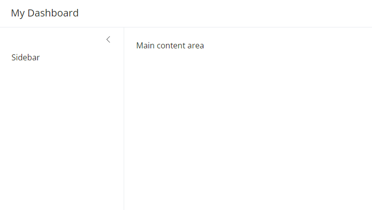
You can add additional elements to the main panel of the page by supplying them to page_sidebar.
By default, the sidebar panel will appear on the left side of your app. You can move it to the right side by giving sidebar the optional argument position = "right".
💻 Try this now
page_sidebar creates a sidebar layout that fills the page, and is a quick way to create a page with a sidebar. If you’d like to create a floating sidebar layout that can appear anywhere on the page, and grows with our content use page_fluid and layout_sidebar.
# Floating sidebar layout
ui <- page_fluid(
layout_sidebar(
sidebar = sidebar("Sidebar"), # sidebar elements
"Main contents" # Main pannel elements
)
)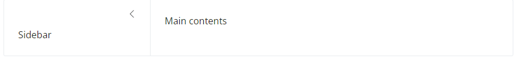
You’ll notice here that the side bar and main contents panes are much smaller now, this is because page_fluid() allows the contents to scale to the required window size to fit the content.
Shiny also allows for more complex layouts too including options for example, page_navbar creates a multi-page user interface that includes a navigation bar. This layout is great for multistage analysis or reporting.
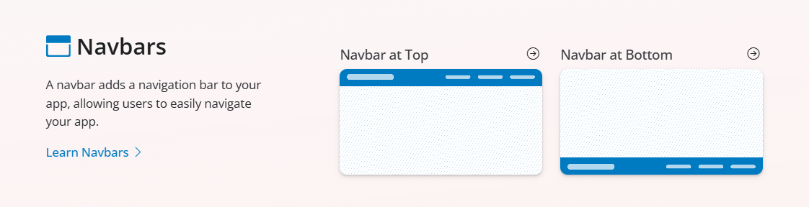
Another option for creating multipage dashbaords is through tabs:
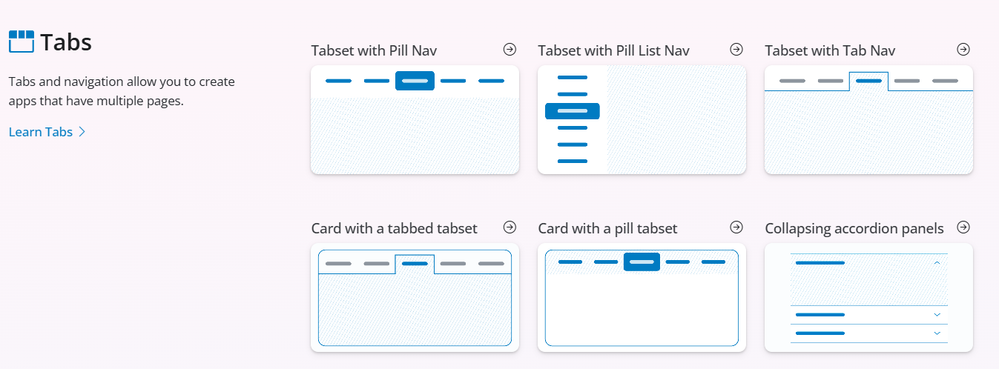
We will stick to using a single page app today but everything we learn can be applied to controlling multipage apps in the future!
Layout Elements
Cards()
Now we have our sidebar and main panel, we can also add containers to the main panel that will house each of our data visualisations, cards() are a common organising unit in modern dashboards.
You can use the function card() to create a card in your Shiny app. card() creates a regular container with borders and padding.
Replace your ui code with the following:
# Floating sidebar layout
ui <- page_fluid(
layout_sidebar(
sidebar = sidebar("Sidebar"),
"Main contents",
# including a card container in the main panel
card(
height=400 # setting the height of the card to ensure we can see it when empty.
)
)
)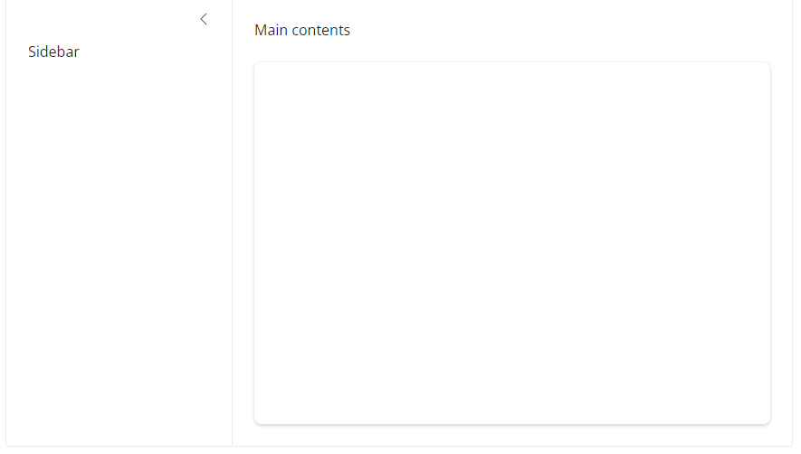
Use cards to present grouped and related information. Add content to a card by supplying arguments to the card() function.
Card item functions create various different parts to the card:
card_header()- A header (with border and background color) for thecard(). Typically appears before acard_body().card_footer()- A header (with border and background color) for thecard(). Typically appears after acard_body().card_body()- A general container for the “main content”.
Exercise 1
- Use the above elements to add a
card_header(),card_footer()andcard_body()to our current application - Hint: try adding some plain text in ” ” to each of the elements.
Show Solution
# inclduing card elements
ui <- page_fluid(
layout_sidebar(
sidebar = sidebar("Sidebar"),
"Main contents",
card(
height=400, #height set to 400 pixels
card_header("A Header"), # add a header
card_body("Card Body"), # add main body
card_footer("A Footer") # add footer
)
)
)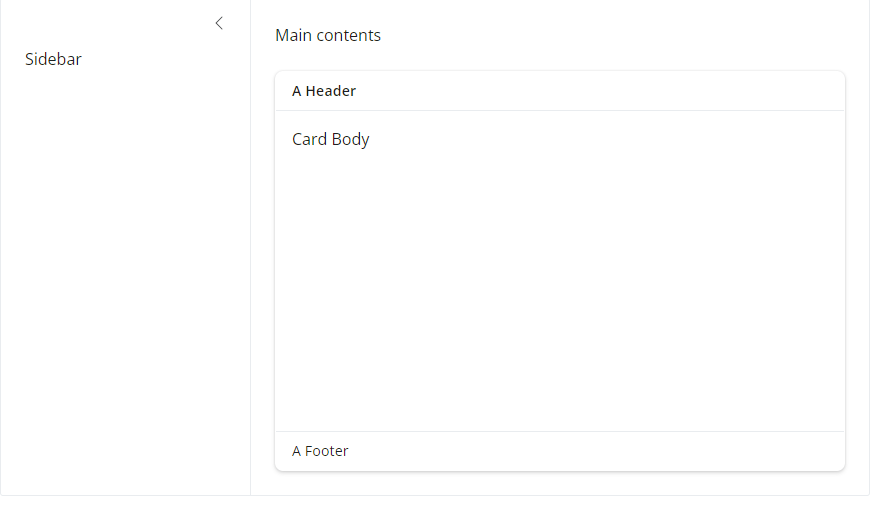
We’ll be using
cards()alot in this tutorial to house the elements of our dashboard. See thebslibCards article to learn more about cards.
value_boxes()
Value boxes are another useful UI component. Use value boxes to highlight important values in your app.
Create a value box with the function value_box().
A value_box() has 4 main parts:
value: Some text value.title: Optional text to display abovevalue.showcase: Optional UI element(s) to display alongside the value.theme: Optional theme to change the appearance of the value box....: Any other text/UI elements to appear belowvalue.
ui <- page_fluid(
#-layout------------------------
layout_sidebar(
#-sidebar---------
sidebar = sidebar("Sidebar"),
#-main pannel content----
"Main contents",
# Value Box
value_box(
title = "Value box", # Title
value = 750 # Value to show
),
# Card
card(
height=400,
full_screen = TRUE,
card_header("A Header"),
card_body("Card Body"),
card_footer("A Footer")
)
)
)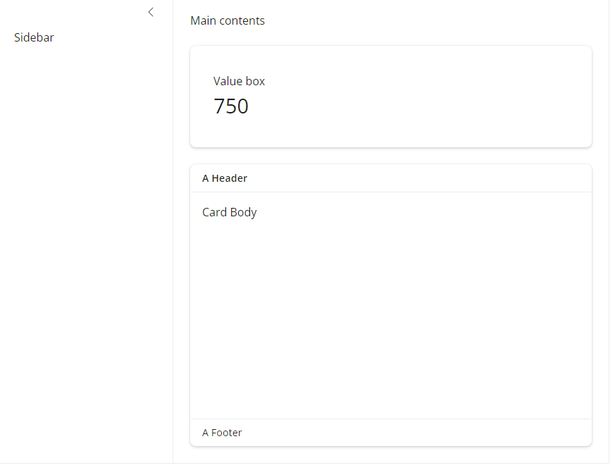
To make our value boxes stand-out even more we can enhance their appearance through setting their theme colour and including inforgraphic icons.
value_box(
title = "Value box", # Title
value = 750, # Value to show
showcase = bsicons::bs_icon("laptop"), #include an icon
theme = "pink" # change the box theme colour
), 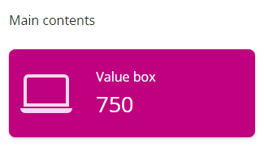
Note
Note: to use Bootstrap icons, use the function bsicons::bs_icon()
Check out the library of avaliable icons here
We can change the location of value_boxes() using the showcase_layout() arguement - options include "left center", "top-right". or "bottom"
Exercise 2
- Add an addiditional
value_box()andcard()to your current dashboard. Set thecard()to a different height and choose a new icon, theme and icon placement for the addiditionalvalue_box()- Hint: Bootstrap’s theme colors are drawn from a second color list that includes variations on several main colors, named literally. These colors include
"blue","purple","pink","red","orange","yellow","green","teal", and"cyan".
- Hint: Bootstrap’s theme colors are drawn from a second color list that includes variations on several main colors, named literally. These colors include
Show Solution
ui <- page_fluid(
#-layout------------------------
layout_sidebar(
#-sidebar---------
sidebar = sidebar("Sidebar"),
#-main pannel content----
"Main contents",
# Value Box
value_box(
title = "Value box", # Title
value = 750, # Value to show
showcase = bsicons::bs_icon("laptop"), #include an icon
theme = "pink" # change the box theme colour
),
# second value box
value_box(
title = "Value box 2",
value = 1993,
showcase = bsicons::bs_icon("calendar"),
showcase_layout = "top right",
theme = "blue"
),
# Card
card(
height=400,
full_screen = TRUE,
card_header("A Header"),
card_body("Card Body"),
card_footer("A Footer")
),
# Second card box
card(
height = 200,
full_screen = TRUE,
card_header("Another Header"),
card_body("Another Card"),
card_footer("Another Footer")
)
)
)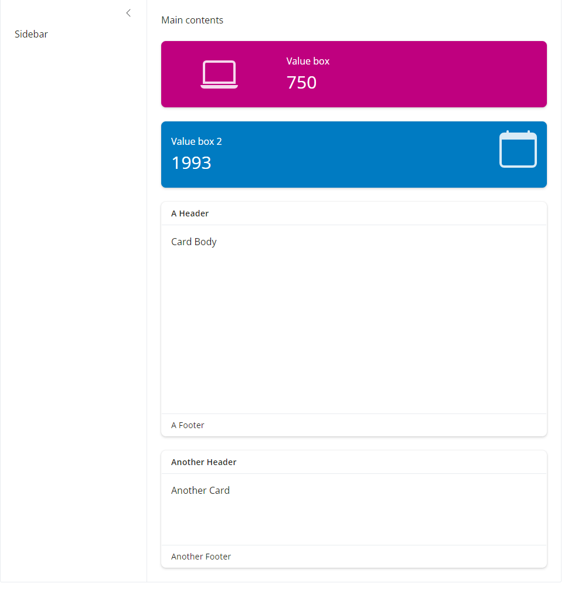
Adjusting Layout Positions
By default, when you add multiple elements to your main panel, Shiny will place them one after another vertically (i.e., one long column). But as we build real dashboards, we often want to organize elements horizontally or into grids to create a cleaner and more informative user interface.
This is where layout functions like layout_columns() and layout_column_wrap() come in.
layout_columns()
The function layout_columns() allows you to place elements next to each other, specifying how many columns wide each element should be. Shiny divides the available space into 12 columns . You can assign any number of columns to each element, as long as they add up to 12 or less.
Let’s try moving our two value boxes side by side:
# Value Boxes in a single row
layout_columns(
value_box(
title = "Value box", # Title
value = 750, # Value to show
showcase = bsicons::bs_icon("laptop"), #include an icon
theme = "pink" # change the box theme colour
),
value_box(
title = "Value box 2",
value = 1993,
showcase = bsicons::bs_icon("calendar"),
showcase_layout = "top right",
theme = "blue"
)
), 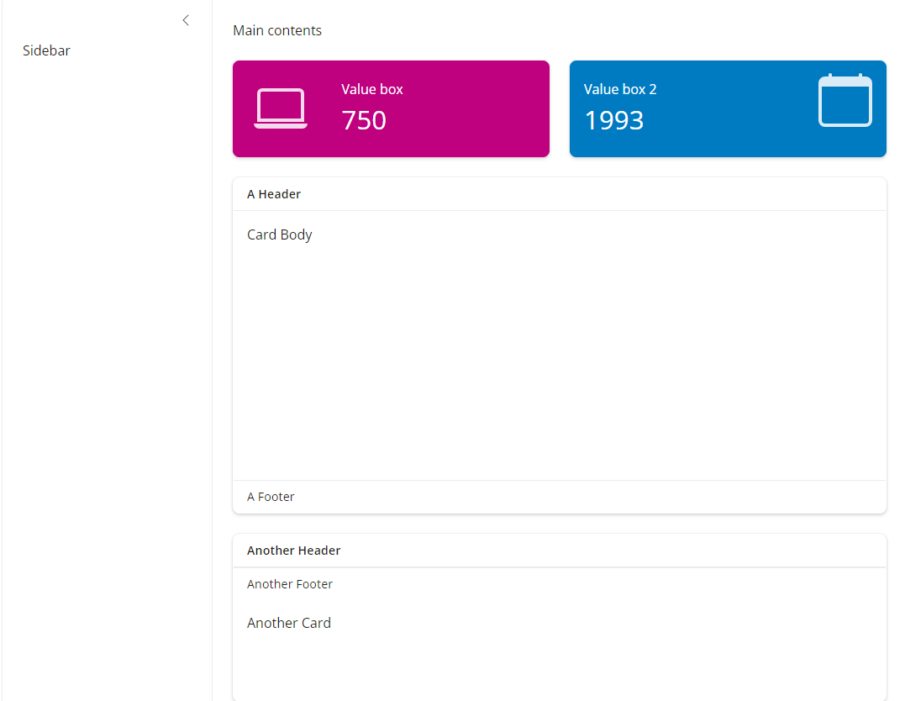
layout_columns() automatically places the two value boxes next to each other. By default, each element inside layout_columns() takes up equal space. If you want more control, you can specify col_widths for each element /12 e.g. col_widths``= c(6, 6).
Exercise 3
- Use
layout_columns()to set thecard()elements into two columns. What do you notice about the height of the cards?
Show Solution
# Cards in a single row
layout_columns(
card(
height=400,
full_screen = TRUE,
card_header("A Header"),
card_body("Card Body"),
card_footer("A Footer")
),
card(
height = 200,
full_screen = TRUE,
card_header("Another Header"),
card_body("Another Card"),
card_footer("Another Footer")
)
),The two cards are now the same height as the tallest card. This is because layout_columns() automatically sets the height of each column to match the tallest element in that row.
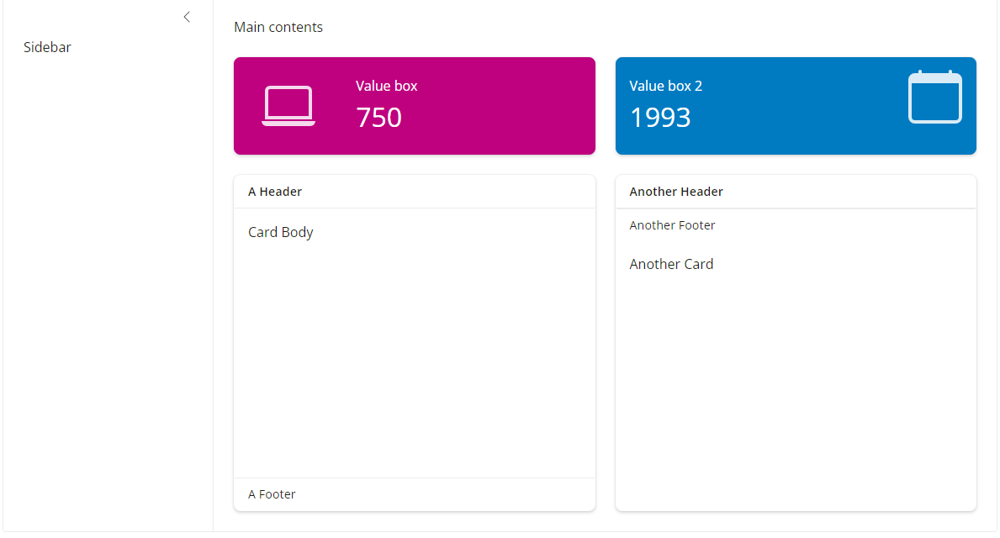
layout_column_wrap()
If you have many elements and want them to automatically wrap onto multiple rows (like a responsive grid), you can use layout_column_wrap().
For example, you might want to display six value boxes, but have them wrap automatically depending on screen size:
# Value Boxes in a single row that wraps responsive to screen size
layout_column_wrap(
value_box(
title = "Value box", # Title
value = 750, # Value to show
showcase = bsicons::bs_icon("laptop"), #include an icon
theme = "pink" # change the box theme colour
),
value_box(
title = "Value box 2",
value = 1993,
showcase = bsicons::bs_icon("calendar"),
showcase_layout = "top right",
theme = "blue"
),
# addiditional boxes
value_box(title = "Value box 3", value = 123),
value_box(title = "Value box 4", value = 456),
value_box(title = "Value box 5", value = 789),
value_box(title = "Value box 6", value = 101112)
), 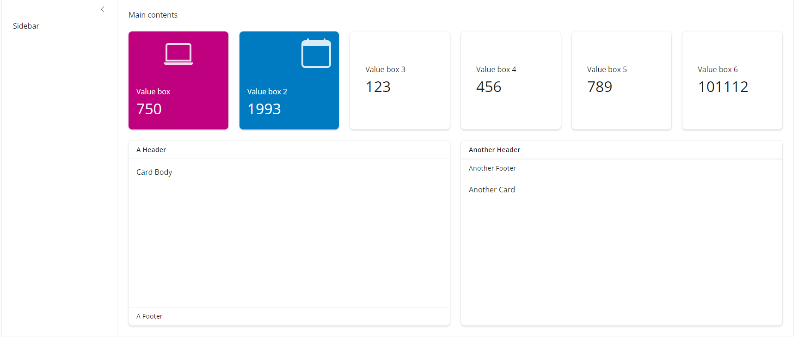
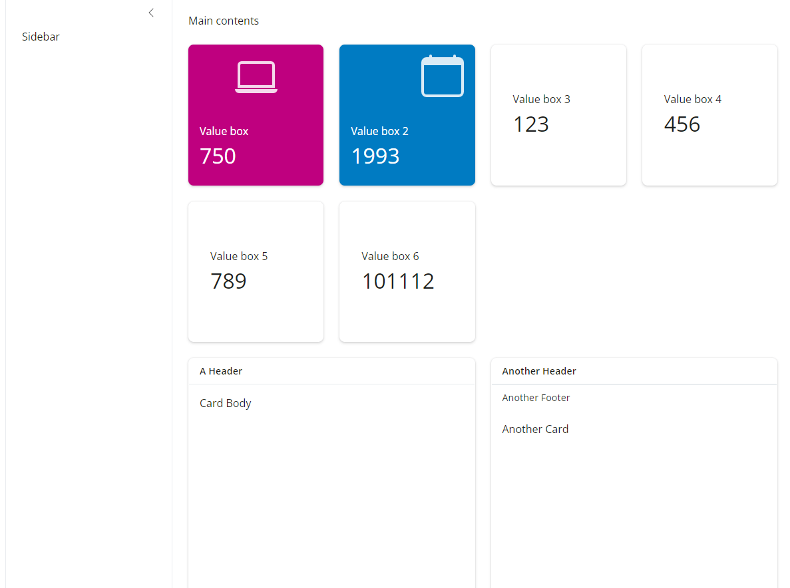
This makes your app much more responsive: as users resize their browser window, the layout adjusts automatically.
Widget Control Elements
Now that we’ve set up a clean layout using bslib, let’s add some interactive functionality, the sidebar is where we direct the user to select inputs the will send messages to the Shiny app. Shiny widgets collect a value from your user. When a user changes the widget, the value will change as well.
Choosing the Right Input controls: A Quick Exploration
Before we add our first user input, it’s helpful to understand a few common types of control widgets in Shiny and when to use them. Inputs allow users to interact with the webpage by clicking a button, entering text, selecting an option, and more.
Shiny provides several ways for users to make selections here are a couple of options:
| Input Type | Function | When to Use |
|---|---|---|
| Dropdown menu | selectInput() |
Best for long lists - compact and searchable |
| Radio buttons | radioButtons() |
Best for short lists with a few clear options (e.g., Yes/No, 3-4 choices) |
| Checkbox group | checkboxGroupInput() |
Best for selecting multiple options |
| Autocomplete select | selectizeInput() |
Similar to selectInput(), but includes type-ahead search by default |
| Single checkbox | checkboxInput() |
Best for simple on/off, true/false inputs |
| Slider | sliderInput() |
Best for selecting continuous values or ranges |
| Numeric input | numericInput() |
Best for precise numeric entry |
| Text input | textAreaInput() |
Best for free text entry (e.g. names, IDs, labels) |
| Date input | dateInput() |
Best for selecting a single date |
| Date range input | dateRangeInput() |
Best for selecting a start and end date |
| File upload | fileInput() |
Best for allowing users to upload files |
| Action button | actionButton() |
Best for triggering explicit actions (e.g. submit, run model) |
Each widget function requires several arguments. The first two arguments for each widget are
a name for the widget: The user will not see this name, but you can use it to access the widget’s value. The name should be a character string.
a label: This label will appear with the widget in your app. It should be a character string, but it can be an empty string
"".
In this example, the name is “action” and the label is “Action”: actionButton("action", label = "Action")
The remaining arguments vary from widget to widget, depending on what the widget needs to do its job. They include things like initial values, ranges, and increments. You can find the exact arguments needed by a widget on the widget function’s help page, (e.g., ?selectInput).
Exercise 4
- We might want our dashboard to be able to filter down and display data for a single Province in the dataset - lets test out some of these widget control examples above and select the most appropriate option for this.
Add the following code to the top of your script after your library() calls and before your ui() code. This ensures the data on Provinces is avaliable to the application.
list_of_provinces <- c("Central", "Copperbelt", "Eastern", "Luapula", "Lusaka", "Southern", "Muchinga", "Northern", "Northwestern", "Western")Now replace your sidebar code with the following:
layout_sidebar(
sidebar = list(
p("Test different input styles. Which one works best for selecting a province from a long list?"),
selectInput(
inputId = "dropdown_test", # ID name that can pass to the server as input$dropdown_test for processing
label = "Dropdown input (selectInput):", # Title the user sees on the UI
choices = sort(list_of_provinces) # values to show in the list drawn from all the province names
),
radioButtons(
inputId = "radio_test",
label = "Radio buttons (radioButtons):",
choices = sort(list_of_provinces)
),
checkboxGroupInput(
inputId = "checkbox_test",
label = "Checkbox group (checkboxGroupInput):",
choices = sort(list_of_provinces)
)
), Reflect:
What happens when the list is long?
Which is more space-efficient?
What would help users most?
Show Solution
The best approach to use was selectInput() because:
We have many provinces to choose from
We only need one selection at a time
It’s clean, compact, and familiar to users
Pause & Reflect: Where We Are
Before we move forward, take a quick moment to review what you’ve built so far:
✅ You’ve created your own Shiny app from scratch.
✅ You set up a modern dashboard layout using bslib::page_fluid() and layout_sidebar()
✅ You’ve learned how to organize content using:
card()to hold your future plots and tablesvalue_box()to display key summary indicatorslayout_columns()andlayout_column_wrap()to control the page structure
✅ You’ve explored how to place interactive control widgets into the sidebar, which will allow users to control the application.
Quick self-check questions
Do you understand the difference between UI and Server parts of the app?
Can you identify where the user interacts (inputs) vs where outputs will be displayed?
Do you feel comfortable adding more cards, value boxes, or inputs to your app?
Part 2 Rendering output and Reactivity
In Part 2, you will learn:
How to add display elements into the dashbaord cards.
How to connect your dataset to generate outputs.
How to update your value boxes and outputs automatically when the user interacts with selection widgets.
In Shiny, reactive expressions automatically update when the user interacts with your app.
Shiny Output Types
You can create outputs in Shiny with a two step process.
Add an object to your user interface.
Tell Shiny how to build the object in the server function. The object will be reactive if the code that builds it calls a widget value.
Shiny provides a family of functions that turn R objects into a Shiny output. Each function creates a specific type of output.
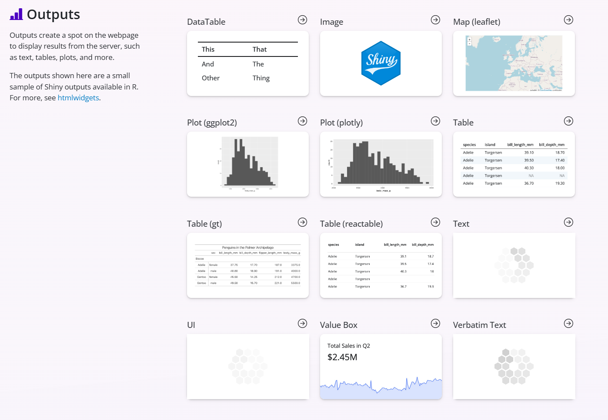
Below is a summary of some key output types, the functions to tell shiny what the expect in the UI and the functions to create it in the server and a short desciption of when to use.
| Output Type | Render Function (Server) | Display Function (UI) | When to Use |
|---|---|---|---|
| Text | renderText() |
textOutput() |
Display simple text strings |
| Tables (static) | renderTable() |
tableOutput() |
Show small static tables |
| Tables (interactive) | renderDT() |
DT::dataTableOutput() |
Show sortable, searchable tables |
| Plots (static) | renderPlot() |
plotOutput() |
Standard static plots (ggplot, base R plots) |
| Plots (interactive) | renderPlotly() |
plotlyOutput() |
Fully interactive plots (hover, zoom, pan) |
| Leaflet Maps | renderLeaflet() |
leafletOutput() |
Interactive geographic maps |
| Images | renderImage() |
imageOutput() |
Display image files (PNG, JPG, etc.) |
| UI elements (dynamic) | renderUI() |
uiOutput() |
Dynamically generate any custom UI |
| Value Boxes | (no render function) | value_box() |
Display single KPI summary values |
What you will notice is that Every output type has:
One render function → goes in the server
One output function → goes in the UI
And you connect them using a shared outputId
Building Outputs: ui and server crosstalk
Lets work through an example to display some information in a card() in the main body of our application. Currently we have just manually specified text and values but lets pull this information from our dataset now. We want to add text output on the earliest and most recent date in our DHIS2 data extract
e.g. we want to show some text that says: > “Data is avaliable from: [date] to [date]”
Ensuring the App has access to our datasets
Our first step is to ensure that the application has access to our data!
We need to ensure that we have at the very top of our script, after the library() call and prior to the ui() and sever() code, code to read in our datasets (DHIS2 data, shapefiles), ensuring the data formats are correct!
#-Read in data for the application-----------------
# Ensure the correct file paths for your project
dhis2_data <-
readRDS("data-clean/dhis2-dashboard-clean.RDS")
province_shp <- readRDS("data-clean/province-shp-clean.RDS") #shapefiles
district_shp <- readRDS("data-clean/district-shp-clean.RDS") #shapefiles
pop_data <- readRDS("data-clean/pop-data.RDS") #population dataWe have the following variables in this dataset:
provincedistrictperiodyeardata_type:Confirmed,Clinical,Testedcount
ui() side arguments
Next we need to update one of our card() functions to tell the card_body() to display the values from our dataset. As we are displaying plain text we use a textOutput() function call to tell the ui this will be a text output.
# Cards in a single row
layout_columns(
card(
height = 400,
full_screen = TRUE,
card_header("A Header"),
card_body(textOutput("date_text_test")), # add textOutput to display text
card_footer("A Footer")
),
card(
height = 200,
full_screen = TRUE,
card_header("Another Header"),
card_body("Another Card"),
card_footer("Another Footer")
)
)
Note
Notice that textOutput() takes an argument, the character string "date_text_test". Each of the *Output functions require a single argument: a character string that Shiny will use as the name of your reactive element. Your users will not see this name, but you will use it later.
Placing this function in ui tells Shiny where to display your object. Next, you need to tell Shiny how to build the object.
We do this by providing the R code that builds the object in the server function.
server() side arguments
The server function plays a special role in the Shiny process; it builds a list-like object named output that contains all of the code needed to update the R objects in your app. Each R object needs to have its own entry in the list.
You can create an entry by defining a new element for output within the server function, like below. The element name should match the name of the reactive element that you created in the ui.
In the server function below, output$date_text_test matches textOutput("date_text_test") in your ui.
server <- function(input, output) {
# tell the server to render Text as this output object
output$date_text_test <- renderText({
# Standard R code to identify min and max information and paste text
paste0("Data is avaliable from: ", min(dhis2_data$period), " to ", max(dhis2_data$period))
})
}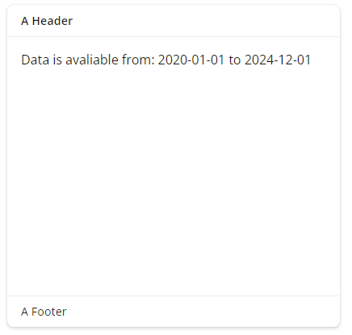
Exercise 5
5a. What happens if we replace the textOutput function in the ui with a plotOutput?
Show Solution
No output is produced as we have a mismatch between the plotOutput in the ui and renderText in the server.
We need to make sure that we are matching the correct ui and server side logic.
5b. Lets try now adding a plot to the second card. Create a standard ggplot() output. Create a bar plot that plots period on the x-axis, count on the y-axis and fills by data_type. Hint - this plot won’t look very nice but we are just ensuring we can add a plot element. Ensure you update both the ui() and server() side information.
Show Solution
# UI side
# Cards in a single row
layout_columns(
card(
height = 400,
full_screen = TRUE,
card_header("A Header"),
card_body(textOutput("date_text_test")),
card_footer("A Footer")
),
card(
height = 200,
full_screen = TRUE,
card_header("Another Header"),
card_body(plotOutput("plot_test")),
card_footer("Another Footer")
)
)
# Servere Side
server <- function(input, output) {
# Text output
output$date_text_test <- renderText({
# Standard R code to identify min and max information and paste text
paste0("Data is avaliable from: ", min(dhis2_data$period), " to ", max(dhis2_data$period))
})
# Plot output
output$plot_test <- renderPlot({
# standard r code for a simple ggplot output
ggplot(dhis2_data) +
geom_col(aes(x = period, y = count, fill = data_type))
})
}
Bonus: Plot interactivity
In this example we implemented a simple static ggplot() but as we have a dashboard we can enhance our plots to be interactive this means the user can hover over data points and see information, zoom in and out, remove series etc.
To do this we use a plotlyOutput instead.
Note
📊 Plotly for Interactive Plots
The Plotly package allows you to turn static ggplot2 charts into interactive visualizations. This means users can hover over points, zoom in, pan across the plot, and see tooltips with data values.
In Shiny, this is especially useful for dashboards where you want dynamic, user-driven exploration of your data.
We use the ggplotly() function to convert a regular ggplot object into a Plotly object, making it fully interactive with minimal changes to your code.
Just remember that not all ggplot2 features translate perfectly, some customization may require testing or tweaking. Or you can always build plots directly using Plotly code but for now we’ll stick with ggplot > ploty conversion.
card(height = 400,
full_screen = TRUE,
card_header("Another Header"),
card_body(plotlyOutput("plot_test")), # specify Plotly Output
card_footer("Another Footer")
) #-Plot output------------------------------
output$plot_test <- renderPlotly({
p <-
ggplot(dhis2_data) +
geom_col(aes(x = period, y = count, fill = data_type))
# Convert ggplot to interactive Plotly object
ggplotly(p)
})✅Check: Try interacting with the plot in your dashboard - select a data series in the legend - what happens when you click?
Incorporating reactivity
input is a second list-like object created by the server function. It stores the current values of all of the widgets in your app. These values will be saved under the names that you gave the widgets in your ui.
Shiny will automatically make an object reactive if the object uses an input value. For example, the server function.
Lets demonstrate this by building in a selection widget to select the year for which we want to visualize data for in our dashboard.
We’ll use a dropdown menu (selectInput()) so users can choose between viewing data from specific years.
Add this to your sidebar inside the ui:
#-sidebar---------
sidebar = list(
p("Add a selection widget"),
selectInput(
inputId = "dropdown_year", # ID name to use in the server
label = "Select a year:", # What the user will see
choices = c(unique(dhis2_data$year)), # Choices shown in the list
selected = max(dhis2_data$year) # Default selection - we default to the most recent year in the dataset
)
),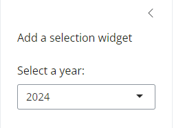
Note: inputId is important! It tells Shiny how to reference this widget later as input$dropdown_year.
Now we’ll tell Shiny how to update the data based on what the user selects.
Inside your server function, before defining your outputs, add:
# Reactive dataset that depends on the dropdown
filtered_data <- reactive({
dplyr::filter(dhis2_data, year == input$dropdown_year)
})What this is doing is creating a reactive dataset - so that now, when the user selects a new year (e.g. 2021), the dataset is filtered to just that year.
Shiny automatically re-runs this code whenever the drop down value changes.
Now we’ll update the text card to display different text depending on the year selected.
Replace your old renderText() with this:
output$date_text_test <- renderText({
# first tell the code that we are using the reactive dataset now
df <- filtered_data()
# use the reactive data
paste0("Data is available from: ", min(df$period)," to ", max(df$period))
})✅ Check: Try selecting different years in the dropdown - your text should automatically update!
Now we’ll make the plot update to match the selected year too:.
#-Plot output------------------------------
output$plot_test <- renderPlotly({
# filtered data
df <- filtered_data()
# plot
p <-
ggplot(df) +
geom_col(aes(x = period, y = count, fill = data_type))
# Convert ggplot to interactive Plotly object
ggplotly(p)
})✅ Check: Your plot should automatically change when you select a different year!
What we learned
Each entry to
output$ <-should contain the output of one of Shiny’srender*functions. These functions capture an R expression. Use therender*function that corresponds to the type of reactive object you are making.Each
render*function takes a single argument: an R expression surrounded by braces,{}. The expression can be one simple line of text, or it can involve many lines of code, as if it were a complicated function call.Think of this R expression as a set of instructions that you give Shiny to store for later. Shiny will run the instructions when you first launch your app, and then Shiny will re-run the instructions every time it needs to update your object.
For this to work, your expression should return the object you have in mind (a piece of text, a plot, a data frame, etc.). You will get an error if the expression returns the wrong type of object.
Exercise 6
- Lets try and update the values boxes we have currently in the Shiny app too with some information from our reactive data. Lets sum the Total confirmed malaria cases and Total malaria tests to be shown as the
value =in ourvalue_box().
I’ve outlined the steps below try and add the code to complete each step before checking the answer:
Step 1: Create a new output$ element that will hold the value of the sum of total confirmed malaria cases. Ensure we sum over confirmed cases data_type in our dataset and as this is likely to be a large number ensure we have comma separators when we format the value.
Show Solution
Place in the server code:
# Text output for value box confirmed cases
output$value_conf <- renderText({
df <- filtered_data()
total_cases <-
df %>%
# filters to confirmed malaria cases
filter(data_type %in% c("Confirmed")) %>%
# sums over all locations and year(s) selected by the user
summarise(total = sum(count, na.rm = TRUE)) %>%
# pulls out the value from summary calculation into named vector
pull(total)
# Format with commas for readability
formatted_total <- scales::comma(total_cases)
paste0(formatted_total)
})Step 2: Update the value_box() function call by removing the currently hard coded value = 750, with the with the dynamic text from our server "value_conf" - select the correct *Output function to do so. Provide an appropriate Title and update the bs_icon to match our type of data.
Show Solution
# Total confirmed cases reported
value_box(
title = "Total Confirmed Cases Reported",
value = textOutput("value_conf"), # reactive value taken from server side outputs
showcase = bsicons::bs_icon("journal-medical"),
showcase_layout = "top right",
theme = "pink"
)Now repeat for tests conducted.
Show Solution
# Text output for value box tests
output$value_test <- renderText({
df <- filtered_data() # this act like a function and pulls through our filtered data to an object inside renderText called 'df'
total_tests <-
df %>%
# filters to tests
filter(data_type %in% c("Tested")) %>%
# sums over all locations and year(s) selected by the user
summarise(total = sum(count, na.rm = TRUE)) %>%
# pulls out the value from summary calculation into named vector
pull(total)
# Format with commas for readability
formatted_total <- scales::comma(total_tests)
paste0(formatted_total)
})value_box(
title = "Total Tests Reported",
value = textOutput("value_test"),
showcase = bsicons::bs_icon("journal-medical"),
showcase_layout = "top right",
theme = "blue"
)Which should give us something that looks like this:
Show Solution
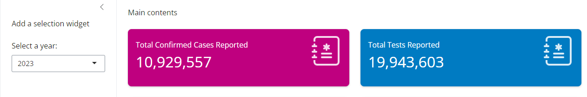
Exercise 7
- You may have noticed we also have data for clinically diagnosed malaria, lets add 2 more value boxes to our dashboard - one for clinical malaria total for the year and one for total all malaria diagnosis.
Show Solution
#-Define UI for application - User Interface------------------------------------
ui <- page_fluid(
#-layout------------------------
layout_sidebar(
#-sidebar---------
sidebar = list(
p("Add a selection widget"),
selectInput(
inputId = "dropdown_year", # ID name to use in the server
label = "Select a year:", # What the user will see
choices = c(unique(dhis2_data$year)), # Choices shown in the list
selected = max(dhis2_data$year) # Default selection - we default to the most recent year in the dataset
)
),
#-main pannel content----
"Main contents",
# Value Box
layout_column_wrap(
# Total confirmed cases reported
value_box(
title = "Total Confirmed Cases Reported",
value = textOutput("value_conf"), # reactive value taken from server side outputs
showcase = bsicons::bs_icon("journal-medical"),
showcase_layout = "top right",
theme = "pink"
),
value_box(
title = "Total Tests Reported",
value = textOutput("value_test"), # reactive value taken from server side outputs
showcase = bsicons::bs_icon("journal-medical"),
showcase_layout = "top right",
theme = "blue"
),
value_box(
title = "Total Clinically Diagnosed Cases Reported",
value = textOutput("value_clin"), # reactive value taken from server side outputs
showcase = bsicons::bs_icon("thermometer-high"),
showcase_layout = "top right",
theme = "orange"
),
value_box(
title = "Total Cases Reported",
value = textOutput("value_total_cases"), # reactive value taken from server side outputs
showcase = bsicons::bs_icon("calculator"),
showcase_layout = "top right",
theme = "yellow"
)
),
# Card
layout_columns(
card(
height = 400,
full_screen = TRUE,
card_header("A Header"),
card_body(textOutput("date_text_test")),
card_footer("A Footer")
),
card(
height = 400,
full_screen = TRUE,
card_header("Another Header"),
card_body(plotlyOutput("plot_test")), # specify Plotly Output
card_footer("Another Footer")
)
)
)
)
#-Define server logic - Computations--------------------------------------------
server <- function(input, output) {
#-Reactive dataset that depends on the dropdown------
filtered_data <- reactive({
dplyr::filter(dhis2_data, year == input$dropdown_year)
})
#-Text output----------------------------------------
output$date_text_test <- renderText({
# first tell the code that we are using the reactive dataset now
df <- filtered_data()
# use the reactive data
paste0("Data is available from: ", min(df$period), " to ", max(df$period))
})
#-Plot output----------------------------------------
output$plot_test <- renderPlotly({
# filtered data
df <- filtered_data()
# plot
p <-
ggplot(df) +
geom_col(aes(x = period, y = count, fill = data_type))
# Convert ggplot to interactive Plotly object
ggplotly(p)
})
#-Text output for value box confirmed cases----------
output$value_conf <- renderText({
df <- filtered_data()
total_cases <-
df %>%
# filters to confirmed malaria cases
filter(data_type %in% c("Confirmed")) %>%
# sums over all locations and year(s) selected by the user
summarise(total = sum(count, na.rm = TRUE)) %>%
# pulls out the value from summary calculation into named vector
pull(total)
# Format with commas for readability
formatted_total <- scales::comma(total_cases)
paste0(formatted_total)
})
#-Text output for value box tests------------------
output$value_test <- renderText({
df <- filtered_data()
total_tests <-
df %>%
# filters to tests
filter(data_type %in% c("Tested")) %>%
# sums over all locations and year(s) selected by the user
summarise(total = sum(count, na.rm = TRUE)) %>%
# pulls out the value from summary calculation into named vector
pull(total)
# Format with commas for readability
formatted_total <- scales::comma(total_tests)
paste0(formatted_total)
})
#-Text output for value box clinical------------------
output$value_clin <- renderText({
df <- filtered_data()
total <-
df %>%
# filters to clinical
filter(data_type %in% c("Clinical")) %>%
# sums over all locations and year(s) selected by the user
summarise(total = sum(count, na.rm = TRUE)) %>%
# pulls out the value from summary calculation into named vector
pull(total)
# Format with commas for readability
formatted_total <- scales::comma(total)
paste0(formatted_total)
})
#-Text output for value box clinical------------------
output$value_total_cases <- renderText({
df <- filtered_data()
total <-
df %>%
# filters to clinical
filter(data_type %in% c("Clinical", "Confirmed")) %>%
# sums over all locations and year(s) selected by the user
summarise(total = sum(count, na.rm = TRUE)) %>%
# pulls out the value from summary calculation into named vector
pull(total)
# Format with commas for readability
formatted_total <- scales::comma(total)
paste0(formatted_total)
})
}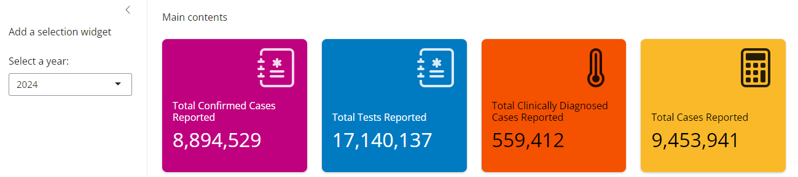
Pause and Reflect
✅ You now have a fully reactive dashboard skeleton:
Inputs: User selects a Year.
Reactive filtering: The app filters the dataset automatically.
Outputs:
Value boxes update in real-time
Interactive time series plots update dynamically
You’ve seen how both text-based and graphical outputs follow the same reactivity pattern.
What do you think?
What do you think about this dashboard so far? Is it actually useful for an end-user or have we just learnt some key skills?
Part 3: Evolving Features - Making Our App Better!
Now that we’ve learnt some of the basic functionality of our dashboard, let’s improve the user experience, visual polish and ensure that all cards and value boxes contain useful information to the end-user.
Firstly here are small enhancements that go a long way in making your app more intuitive, accessible, and navigable for the user.
Adding a Short Description of the Application
As we continue to improve the user experience, it’s helpful to provide some context or instructions directly in the app. One simple but effective enhancement is adding a short descriptive text at the top of the sidebar panel and an application title.
This gives users a quick overview of what the tool does, what the inputs mean, or what they should expect to see - without needing to refer to an external guide.
In our ui we can replace the p("Add a selection widget") with a more informative description. And add a main title to replace "Main contents" .
Currently we have just used plan text but we can format our text into Headings Styles to make titles stand out to the user, you can use the functions h1() for Heading 1 style, h2(), h3() etc.
The p() function inserts a paragraph of plain text.
#-Define UI for application - User Interface------------------------------------
ui <- page_fluid(
#-layout------------------------
layout_sidebar(
#-sidebar---------
sidebar = list(
p("DHIS2 data has been cleaned and summarised from the facility level data."), # sidebar title
selectInput(
inputId = "dropdown_year", # ID name to use in the server
label = "Select a year:", # What the user will see
choices = c(unique(dhis2_data$year)), # Choices shown in the list
selected = max(dhis2_data$year) # Default selection - we default to the most recent year in the dataset
)
),
#-main pannel content----
h1("Zambia Malaria Indicators Dashboard"), # App title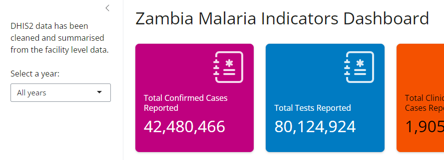
Tip
If you want to include more detailed information (e.g., methodology or indicator definitions), we could use a collapsible help text, a modal popup, or a separate “About” tab.
For now lets keep things simple.
Theming with bs_theme 🎨
Until now, our dashboard has been using the default Shiny style: functional,but plain and we added colour values to our value_box. We can now take advantage of the bslib package to apply modern, responsive theming with just a few lines of code (via bootswatch).
Applying a theme makes your app easier to use, improves readability, and gives it a more professional look - especially useful when sharing with stakeholders or integrating into your organization’s brand.
We can tell our app directly to use a built-in theme in the UI code, add the following code to the top of your ui() function, before the layout_sidebar() call.
# Adding theming elements
theme = bs_theme(
version = 5, # Use Bootstrap 5
bootswatch = "darkly", # Choose a Bootswatch theme
base_font = font_google("Roboto") # Optional: use a modern font
)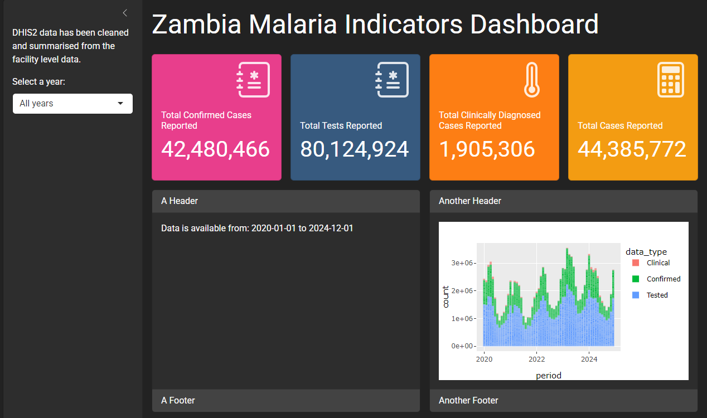
Exercise 8
- Try replacing
"darkly"with other Bootswatch themes like"cosmo","journal","sandstone","minty", or"cybord"or select from the webpage linked. Hint If your Shiny theme doesn’t change when you run the App - try restarting your R session. If we remove the hard codedtheme=values of ourvalue_boxes()they too will update with the chosenbs_theme.
You can also try out styles live inside your app using bs_themer(). To use it, just call bs_themer() once inside your server() function:
server <- function(input, output) {
bs_themer()
# The rest of our code ...
} 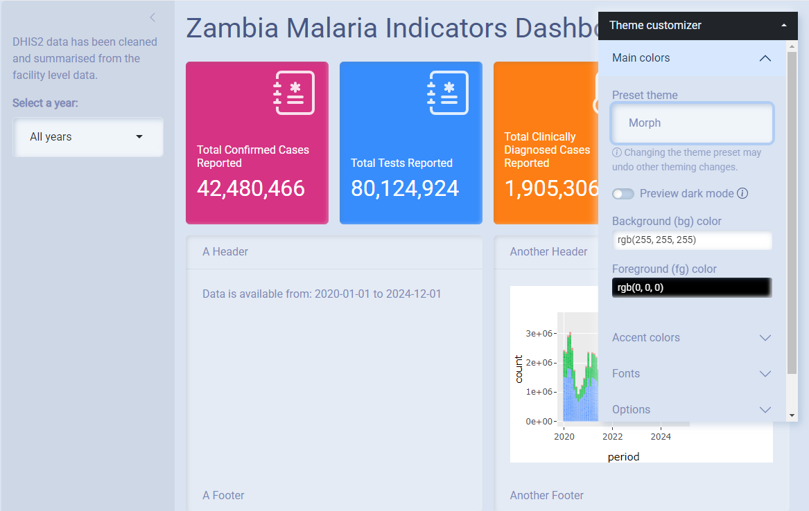
🎨🖌 Lets get creative!
As well as experimenting with pre-built themes you can also customise your own theming using bs_themer - play around with colours, fonts etc and create your own theme for your application. You may want to pick colors that resonate with the country or program branding, PATH colours or your favorite football team - get creative!
bs_themer lets us know what we changed and then we can add this to our theme = bs_theme() call.
For example here’s a custom theme I selected using bs_themer() and how I translated the elements into bs_theme()
# Adding theming elements
theme = bs_theme(
version = 5,
fg = "rgb(249, 95, 139, 0.71)", # set the foreground colour
bg = "rgb(255, 255, 255)", # set the background colour
primary = "#6D475F", # set the primary colour
secondary = "#C3A3EF", # set the secondary colour
success = "#A8D578", # set the success colour
info = "#95AFF1", # set the info colour
warning = "#EB9158", # set the warning colour
danger = "#F16B6B", # set the danger colour
)
Caution
Don’t forget to remove bs_themer() from the server() once you’re done - it’s just for development.
To give users the opportunity to pick between a light or dark mode of your dashboard too you can simply implement the following in the ui
Here we place it after the description in the sidebar but you can place it anywhere in the UI and set the default to start the app in light mode.
# add dark/light switch
input_dark_mode(mode="light")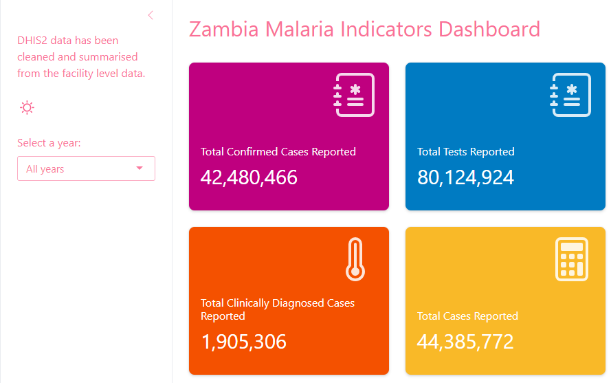
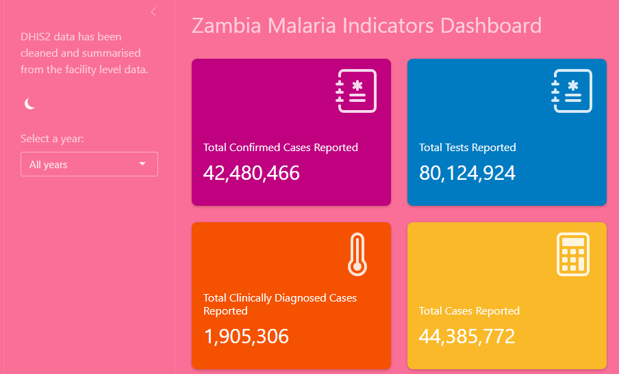
Now we have developed a theme we have another option for how to set the theme argument for our value boxes. To ensure that when we change the theme of our app our value boxes automatically align with that theme we can set the theme argument to be "primary" or "secondary" etc and the boxes will inherit the colour values of the themes defined colours - let’s add this now.
# Value Boxes
layout_column_wrap(
# Total confirmed cases reported
value_box(
title = "Total Confirmed Cases Reported",
value = textOutput("value_conf"), # reactive value taken from server side outputs
showcase = bsicons::bs_icon("journal-medical"),
showcase_layout = "top right",
theme = "primary"
),
value_box(
title = "Total Tests Reported",
value = textOutput("value_test"), # reactive value taken from server side outputs
showcase = bsicons::bs_icon("journal-medical"),
showcase_layout = "top right",
theme = "secondary"
),
value_box(
title = "Total Clinically Diagnosed Cases Reported",
value = textOutput("value_clin"), # reactive value taken from server side outputs
showcase = bsicons::bs_icon("thermometer-high"),
showcase_layout = "top right",
theme = "success"
),
value_box(
title = "Total Cases Reported",
value = textOutput("value_total_cases"), # reactive value taken from server side outputs
showcase = bsicons::bs_icon("calculator"),
showcase_layout = "top right",
theme = "danger"
)
)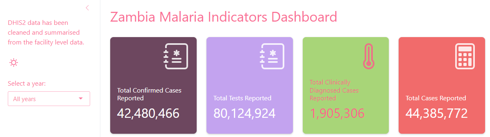
Adding a Logo to Your App
Once you’ve customized the colors and fonts, finish off your look by adding a logo (or icon/banner) to the top of your sidebar = sidebar() code.
#-sidebar---------
sidebar = list(
# add a logo
tags$img(src = "logo.png"), # make sure this image exists in a folder called www
p("DHIS2 data has been cleaned and summarised from the facility level data."),
input_dark_mode(mode = "light"),
selectInput(
inputId = "dropdown_year", # ID name to use in the server
label = "Select a year:", # What the user will see
choices = c(unique(dhis2_data$year)), # Choices shown in the list
selected = max(dhis2_data$year) # Default selection - we default to the most recent year in the dataset
)
)Then do the following:
Folder Setup
Create a
www/folder in your app directory if it doesn’t exist.Save your logo or image as
logo.png(or any name but it must match what you coded up).Shiny will automatically read image files from that folder.
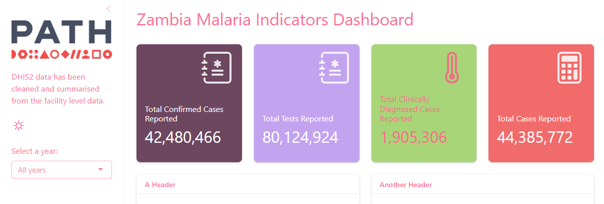
Exercise 9
- Find a logo online (e.g., your org, country flag, or malaria-related symbol or an image of your pet). Create and save it to your app’s
www/folder. Add it to the sidebar usingtags$img().
Wrapping up Part 3 - Evolved Styling
In Part 3, we made your app feel more professional and intuitive for end users:
Included descriptive text in your sidebar and main title.
Applied a customizable visual theme with
{bslib}.Enhanced branding by adding a logo.
Made sure your value boxes inherit theme colors automatically.
These are small details - but they make your app feel polished, intentional, and ready to share with end users.
What do you think?
What do you think about this dashboard so far? Is it actually useful for an end-user or have we just learnt some key skills?
Part 4 - Building for the user
Now lets improve the overall user experience of our application. Right now we have a whole card displaying not alot of data along with a plot that displays too much information.
To streamline lets add the summary information on our data availability period to underneath the time period selection input - lets format the dates to make it easier for the user to read too.
In the server code update the output$date_text_test code:
#-Text output----------------------------------------
output$date_text_test <- renderText({
# first tell the code that we are using the reactive dataset now
df <- filtered_data()
# find the earliest and latest dates
min_date <- min(df$period)
max_date <- max(df$period)
# use the reactive data
paste0("Data is shown from: ", format(min_date, "%B %d, %Y"), " to ", format(max_date, "%B %d, %Y"))
})Now in the ui code remove the first card() and update the sidebar code to place our summary text right after the input selection tool:
#-sidebar---------
sidebar = list(
# add a logo
tags$img(src = "logo.png"),
#-Add light/dark option--------
input_dark_mode(mode = "light"),
# Input selection
selectInput(
inputId = "dropdown_year", # ID name to use in the server
label = "Select a year:", # What the user will see
choices = c(unique(dhis2_data$year)), # Choices shown in the list
selected = max(dhis2_data$year) # Default selection - we default to the most recent year in the dataset
),
# Test summarise the time period avaliable
textOutput("date_text_test")
),Now it’s time to enhance what our user is actually able to see and interact with in our data, let’s level up by introducing addiditional output types and features so that we can convey more information than what we have currentlly presented in our app.
A reminder that Shiny supports a wide range of different output types
We’ll walk through some different examples of outputs how we can control their appearance/dissapearance in the app.
Plotting enhancements - tab set cards
Now lets work on our plot - lets make this card just display the Confirmed malaria case data.
#-Plot output----------------------------------------
output$plot_test <- renderPlotly({
# filtered data
df <-
filtered_data() |>
# Confirmed cases only
filter(data_type == "Confirmed")
# plot
p <-
ggplot(df) +
geom_col(aes(x = period, y = count, fill = data_type))
# Convert ggplot to interactive Plotly object
ggplotly(p)
})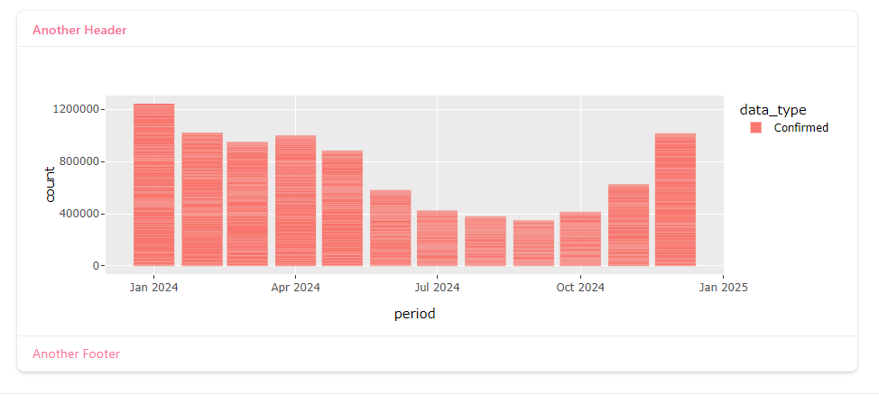
This still doesn’t look great and you’ll notice that we have many bars making up each month in our plot - this is because we haven’t aggregated any data yet and all of the district level data is being displayed.
Lets summarise the data to the national level, to help us decide what plots are useful for this dashoard - we’ll build in different level summaries later on but lets focus just on national level for this time.
#-Plot output----------------------------------------
output$plot_test <- renderPlotly({
# filtered data
df <-
filtered_data() |>
# Confirmed cases only
filter(data_type == "Confirmed") |>
# group by period
group_by(period, data_type) |>
# summarise counts
summarise(count = sum(count, na.rm = TRUE))
# plot
p <-
ggplot(df) +
geom_col(aes(x = period, y = count, fill = data_type))
# Convert ggplot to interactive Plotly object
ggplotly(p)
})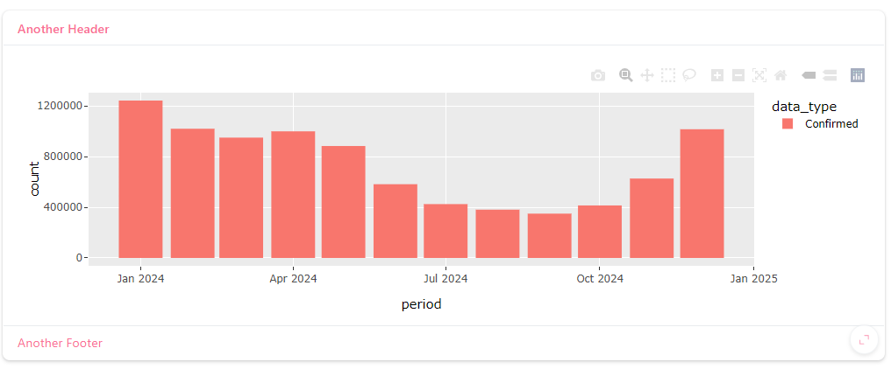
This still isn’t the best appearance so lets change the following too: - geom_point() and geom_line() - cleaner themeing with theme_minimal() - better axis labels
#-Plot output----------------------------------------
output$plot_test <- renderPlotly({
# filtered data
df <-
filtered_data() |>
# Confirmed cases only
filter(data_type == "Confirmed") |>
# group by period
group_by(period, data_type) |>
# summarise counts
summarise(count = sum(count, na.rm = TRUE))
# plot
p <-
ggplot(
df,
aes(x = period, y = count, col = data_type)
) +
geom_point() +
geom_line() +
labs(
x = "Month, Year",
y = "Count",
col = "Data Element"
) +
theme_minimal(14) +
scale_y_continuous(
labels = comma,
limits = c(0, NA)
)
# Convert ggplot to interactive Plotly object
ggplotly(p)
})- update the card header and footers
Update the ui card code
# UI update - make the footer reactive text
# Card
layout_columns(
card(
height = 400,
full_screen = TRUE,
card_header("Malaria Reports per Month"),
card_body(plotlyOutput("plot_test")), # specify Plotly Output
card_footer(uiOutput("footer_text")) # reactive text summary on year data
)
)Add this to the server code
#-Footer text output----------------------------------------
output$footer_text <- renderText({
# first tell the code that we are using the reactive dataset now
df <- filtered_data()
# find the earliest and latest dates
min_date <- min(df$period)
max_date <- max(df$period)
# use the reactive data
paste0("Data is shown from: ", format(min_date, "%B %d, %Y"), " to ", format(max_date, "%B %d, %Y"))
})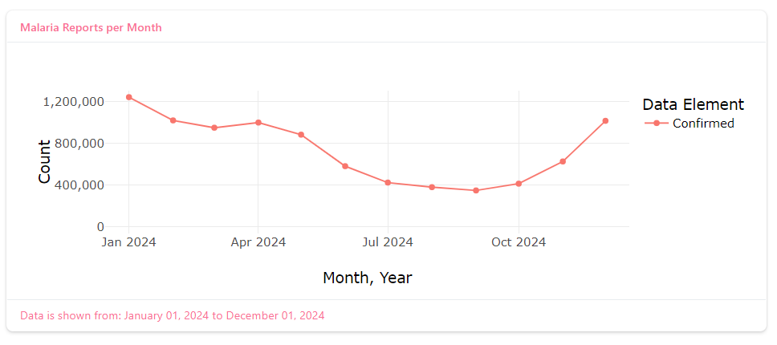
Right now, our dashboard shows only Confirmed malaria cases over time. But what if users want to compare trends for Confirmed, Clinical, and Tested data - without cluttering the same plot?
We can achieve this using a tabbed card layout. This makes your dashboard more interactive and gives users control over what data they explore.
A navset_card_tab() lets you place multiple tabs within a single card. Each tab can show different content - in our case, a different dataset or visualization - while keeping a unified, styled appearance.
We’ll build one tab per data type:
Confirmed - lab-confirmed malaria cases
Clinical - clinically diagnosed malaria cases
Tested - total malaria tests reported
Replace your existing single card() block with a tabbed card layout. Each tab will have its own plot output.
# Card
layout_columns(
navset_card_tab(
height = 400,
full_screen = TRUE,
card_header("Monthly Malaria Indicators"),
# --- Tab 1: Confirmed ---
nav_panel(
"Confirmed",
plotlyOutput("plot_confirmed")
),
# --- Tab 2: Clinical ---
nav_panel(
"Clinical",
plotlyOutput("plot_clinical")
),
# --- Tab 3: Tested ---
nav_panel(
"Tested",
plotlyOutput("plot_tested")
),
# --- Dynamic footer
card_footer(uiOutput("footer_text"))
)
)navset_card_tab() wraps all tabs in one interactive container.
nav_panel() creates each labeled tab.
We now need separate renderPlotly() outputs - one per tab - using filtered subsets of the data.
Let’s create a small helper function to avoid repetitionof our code, and then call it three times to create the plots.
We place the helper function outside of the ui and server code just after we read our data in:
#-Read in data for the application---------------------------------------------
# Ensure the correct file paths for your project
dhis2_data <-
readRDS("data/dhis2-dashboard-clean.RDS")
province_shp <- readRDS("data/province-shp-clean.RDS") # shapefiles
district_shp <- readRDS("data/district-shp-clean.RDS") # shapefiles
pop_data <- readRDS("data/pop-data.RDS") # population data
#-helper function to create plots----------------------------------------------
make_time_plot <- function(df, data_type_name) {
df_filtered <-
df |>
filter(data_type == data_type_name) |>
group_by(period, data_type) |>
summarise(count = sum(count, na.rm = TRUE))
p <- ggplot(
df_filtered,
aes(x = period, y = count, col = data_type)
) +
geom_point() +
geom_line() +
labs(
x = "Month, Year",
y = "Count",
col = NULL
) +
theme_minimal(14) +
scale_y_continuous(labels = comma, limits = c(0, NA))
ggplotly(p)
}And then replace the server code we currently have with this much smaller update:
#-Plot outputs----------------------------------------
output$plot_confirmed <- renderPlotly({
make_time_plot(filtered_data(), "Confirmed")
})
output$plot_clinical <- renderPlotly({
make_time_plot(filtered_data(), "Clinical")
})
output$plot_tested <- renderPlotly({
make_time_plot(filtered_data(), "Tested")
})make_time_plot() is a custom mini-function that takes your reactive dataset and a case type, then builds a consistent Plotly chart.
You can reuse this function across multiple tabs - it keeps your server code cleaner.
Each tab references a separate output ID, matching those defined in your UI.

Lets also make the colours of our plot match the same colour for the data_element in the value_boxes.
scale_color_manual(values = c(
"Confirmed" = "#6D475F",
"Clinical" = "#95AFF1",
"Tested" = "#C3A3EF"
))Exercide 10
- Where else in our application code might we benefit from writing a function to reduce repetitive code in the
server?
Show Solution
The code that we are currently using the create the value box summary text could also be a single function that we call for each of the indicators.
Like this:
#-helper function to summarise for value boxes----------------------------------
value_box_val <- function(df, data_type_name) {
total <-
df %>%
# filters to confirmed malaria cases
filter(data_type %in% data_type_name) %>%
# sums over all locations and year(s) selected by the user
summarise(total = sum(count, na.rm = TRUE)) %>%
# pulls out the value from summary calculation into named vector
pull(total)
# Format with commas for readability
formatted_total <- scales::comma(total)
paste0(formatted_total)
} #-Value Box Values-----------------------------------
output$value_conf <- renderText({
value_box_val(filtered_data(), "Confirmed")
})
output$value_test <- renderText({
value_box_val(filtered_data(), "Tested")
})
output$value_clin <- renderText({
value_box_val(filtered_data(), "Clinical")
})
output$value_total_cases <- renderText({
value_box_val(filtered_data(), c("Clinical", "Confirmed"))
})Plotting enhancements - toggle switches
Our dashboard now looks great with the tabbed card layout, but right now users can only view one year at a time. Let’s take it a step further by allowing users to compare trends across multiple years - all within the same plots.
This feature helps answer questions like:
- “How did malaria cases in 2023 compare to 2022 or 2021?”
We’ll add a toggle button that lets users switch between single-year view and multi-year comparison view and we’ll add the toggel directly in the card header.
Placing the toggle inside the card makes the interaction feel contextual. The user can instantly change how the chart is displayed - without scrolling to the sidebar.
# Card
layout_columns(
navset_card_tab(
height = 400,
full_screen = TRUE,
title = "Monthly Malaria Indicators",
# --- Toggle switch---
checkboxInput(
inputId = "compare_years",
label = "Compare years",
value = FALSE
),
# --- Tabs for each data type ---
nav_panel("Confirmed", plotlyOutput("plot_confirmed")),
nav_panel("Clinical", plotlyOutput("plot_clinical")),
nav_panel("Tested", plotlyOutput("plot_tested")),
# --- Footer summary text ---
card_footer(uiOutput("footer_text"))
)
)The toggle (checkboxInput) works the same as before, but now lives inside the visualization container.
We’ll update our plotting logic so that when the user turns Compare Years ON, the plot displays multiple colored lines - one per year.
When the toggle is OFF, it returns to showing only the selected year.
We update the make_time_plot() function we had before so that: - Single-year mode → Filters for the selected year and shows monthly counts.
- Compare-years mode → Plots every year as a separate colored line on the same axis.
make_time_plot <- function(df, data_type_name, compare_years) {
# For single year plot as before
if (!isTRUE(compare_years)) {
# ---- Single-year view (uses reactive df) ----
df_filtered <- df |>
dplyr::filter(data_type == data_type_name) |>
dplyr::group_by(period, data_type) |>
dplyr::summarise(count = sum(count, na.rm = TRUE), .groups = "drop")
# guard against empty data
if (nrow(df_filtered) == 0) {
return(NULL)
}
p <- ggplot(
df_filtered,
aes(x = period, y = count, col = data_type)
) +
geom_point() +
geom_line() +
labs(
x = "Month, Year",
y = "Count",
col = NULL
) +
theme_minimal(14) +
scale_y_continuous(labels = scales::comma, limits = c(0, NA)) +
scale_color_manual(values = c(
"Confirmed" = "#6D475F",
"Clinical" = "#95AFF1",
"Tested" = "#C3A3EF"
))
return(plotly::ggplotly(p))
} else {
# ---- Compare-years view (use all years) ----
df_filtered <- dhis2_data |>
dplyr::filter(data_type == data_type_name) |>
dplyr::group_by(period, year, data_type) |>
dplyr::summarise(count = sum(count, na.rm = TRUE), .groups = "drop") |>
dplyr::mutate(
month = lubridate::month(period),
year = as.factor(year)
)
if (nrow(df_filtered) == 0) {
return(NULL)
}
p <- ggplot(
df_filtered,
aes(x = month, y = count, col = year, group = year)
) +
geom_line(linewidth = 1) +
geom_point(size = 1.5) +
scale_x_continuous(breaks = 1:12, labels = month.abb) +
labs(
x = "Month",
y = "Count",
col = "Year"
) +
theme_minimal(14) +
scale_y_continuous(labels = scales::comma, limits = c(0, NA)) +
scale_color_brewer(palette = "Set2")
return(plotly::ggplotly(p))
}
}The function uses
if (!isTRUE(compare_years))…else… so that only one branch runs.Each branch returns its Plotly chart, preventing Shiny from receiving
NULL.month(period)converts your date variable into a simple month for clean comparison across years.The Set2 palette gives clear, distinct colors for each year.
To render the plots we then need to pass your toggle’s value (input$compare_years) to the server code too:
#-Plot outputs----------------------------------------
output$plot_confirmed <- renderPlotly({
make_time_plot(filtered_data(), "Confirmed", compare_years = input$compare_years)
})
output$plot_clinical <- renderPlotly({
make_time_plot(filtered_data(), "Clinical", compare_years = input$compare_years)
})
output$plot_tested <- renderPlotly({
make_time_plot(filtered_data(), "Tested", compare_years = input$compare_years)
})✅ Test It Out!
Run your app.
Check that the “Compare years” toggle switches smoothly:
Off → a single line for the selected year.
On → multiple colored lines, one per year.
Hover over points to see counts per month and year.
If there are specific years you want to compare you can also toggle the years displayed by clicking the years in the legend to show or hide the lines!
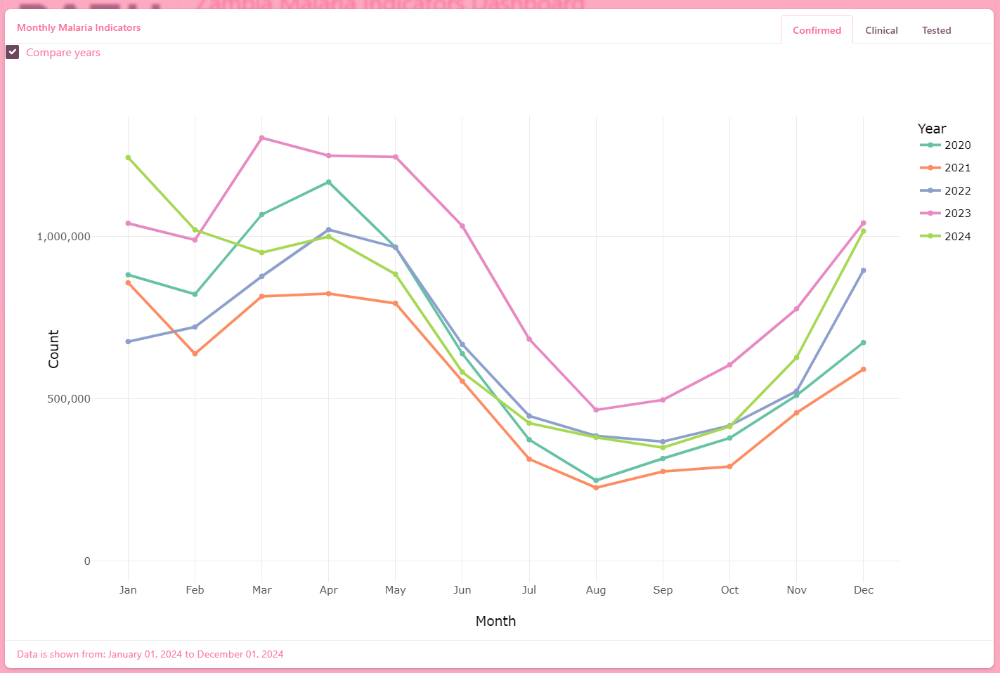
Recap
In this step, you learned how to:
Write a reusable plotting function that adapts to user selections.
Return interactive Plotly objects from within an
if…elsestructure.Add contextual controls inside a card header for a clean, modern UX.
Compare temporal patterns across years with minimal extra code.
Plotting enhancements - calculated variables
One of the powerful benefits of building dashboards in R is that we can compute new indicators directly inside our Shiny app using the data already loaded.
Let’s take Test Positivity Rate (TPR) as an example. This isn’t directly stored in our dataset but can easily be computed:
TPR = Confirmed Cases / Malaria Tests
###Step 1 - Add a new “TPR” tab
In your UI, add one more nav_panel() to your navset_card_tab() that will display the TPR plot.
Show Solution
# ... inside navset_card_tab(...)
nav_panel("Confirmed", plotlyOutput("plot_confirmed")),
nav_panel("Clinical", plotlyOutput("plot_clinical")),
nav_panel("Tested", plotlyOutput("plot_tested")),
# --- New tab ---
nav_panel("TPR", plotlyOutput("plot_tpr")),Step 2 - Compute TPR from our data
Our dataset doesn’t contain a “TPR” column, but it does contain the two pieces we need: the number of Confirmed cases and the number of Tested cases.
We’ll compute TPR inside the app each time the user changes inputs (year or compare toggle).
We add these additional functions to the top of our script:
#-A small helper to avoid dividing by zero-----------------------------
safe_divide <- function(num, den) ifelse(den > 0, num / den, NA_real_)
#-A function to compute monthly TPR------------------------------------
compute_tpr_monthly <- function(df) {
# 1. Keep only the data we need
summed <-
df |>
dplyr::filter(data_type %in% c("Confirmed", "Tested")) |>
dplyr::group_by(period, year, data_type) |>
dplyr::summarise(count = sum(count, na.rm = TRUE), .groups = "drop_last") |>
# 2. Reshape from long → wide so we have columns Confirmed and Tested
tidyr::pivot_wider(
names_from = data_type,
values_from = count,
values_fill = 0
) |>
dplyr::ungroup()
# 3. Calculate TPR
summed <- summed |>
dplyr::mutate(TPR = safe_divide(Confirmed, Tested))
# 4. For compare view, add month number for plotting
summed <- summed |>
dplyr::mutate(
month = lubridate::month(period),
year = as.factor(year)
)
summed
}What’s happening here:
We first filter the data so we only keep rows for “Confirmed” and “Tested”.
We group by time to make monthly totals.
We pivot to get two columns - Confirmed and Tested.
We calculate TPR safely (avoiding division by 0).
When comparing years, we extract the month number so that different years can be overlaid on the same axis.
This is how we transform raw counts into a brand-new metric right inside the dashboard.
Step 3 - Create the TPR plot function
Next, we’ll build a plotting helper, similar to the ones you already used. This lets us reuse the same logic for both single-year and compare-years views.
#-TPR plotting function-----------------------------------------
make_tpr_plot <- function(df, compare_years, select_year) {
# Step 1: calculate the data we need
tpr_df <- compute_tpr_monthly(df)
# Step 2: stop if there’s no data
if (nrow(tpr_df) == 0) {
return(NULL)
}
# Step 3: build the plot
if (!isTRUE(compare_years)) {
# ---- Single-year plot ----
p <- ggplot(
tpr_df |>
filter(year == select_year),
aes(x = period, y = TPR)
) +
geom_point() +
geom_line() +
labs(
x = "Month, Year",
y = "TPR"
) +
theme_minimal(14) +
scale_y_continuous(labels = scales::percent, limits = c(0, 1))
} else {
# ---- Compare-years plot ----
p <- ggplot(
tpr_df,
aes(x = month, y = TPR, col = year, group = year)
) +
geom_line(linewidth = 1) +
geom_point(size = 1.5) +
scale_x_continuous(breaks = 1:12, labels = month.abb) +
labs(
x = "Month",
y = "TPR",
col = "Year"
) +
theme_minimal(14) +
scale_y_continuous(labels = scales::percent, limits = c(0, 1)) +
scale_color_brewer(palette = "Set2")
}
plotly::ggplotly(p)
}if (!isTRUE(compare_years)) handles the normal single-year mode.
When comparing, we use month on the x-axis and year for color, so each year’s line overlays nicely.
scale_y_continuous(labels = scales::percent) displays TPR in % format, making it easier to read.
Step 4 - Connect the plot to the UI tab
Now, tell Shiny to render the new plot.
Add this code below your other renderPlotly() blocks:
output$plot_tpr <- renderPlotly({
make_tpr_plot(dhis2_data, input$compare_years, input$dropdown_year)
})This connects your new TPR plot to the “TPR” tab you added earlier.
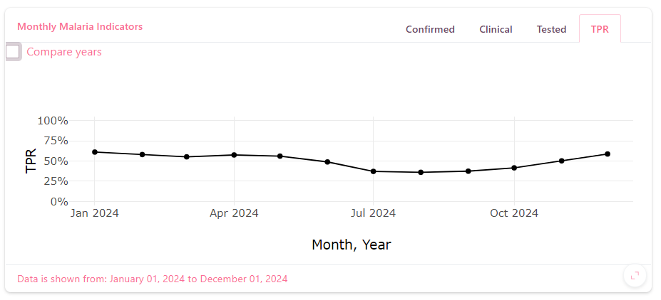
Step 5 - Run and Explore
Try out the dashboard!
Click the TPR tab → you should see the Test Positivity Rate for the selected year.
Turn on Compare years → each year appears as a separate colored line.
Hover → see monthly TPR values as percentages.
Recap
In this section you learned:
✅ How to create a derived variable directly inside Shiny.
✅ How to pivot and summarise data to prepare new indicators.
✅ How to extend your tabbed card with an additional plot.
✅ How to reuse your existing compare years logic to make every indicator more dynamic.
What do you think?
You may notice that the hover labels on our Plotly charts aren’t as polished as they could be.
Right now, they’re showing the raw column names and values directly from our dataset - which works, but isn’t always very informative for end users.
The good news is that Plotly allows you to customize hover tooltips easily.
For example, you can:
Round numbers or format percentages neatly (e.g., show 45.3% instead of 0.453).
Reorder or rename fields to make them more descriptive (e.g., “Month: January” instead of “period”).
Add extra context like “National TPR” or “Province name” right in the hover box.
Add the following inside your aes() calls in your make_tpr_plot() function:
aes(
# existing code...
# Custom hover label text
text = paste0(
"<b>Year:</b> ", year,
"<br><b>Month:</b> ", month.abb[month],
"<br><b>TPR:</b> ", scales::percent(TPR, accuracy = 0.1)
)
)Then, when converting to Plotly, specify that the hover text should come from this new field: ggplotly(p, tooltip = "text")
What this does:
Adds HTML-style
<b>bold formatting for cleaner, readable tooltips.Converts TPR to a rounded percentage using
scales::percent().Replaces column names with friendly labels like Year, Month, and TPR.
The
tooltip = "text"option tells Plotly to display only your custom hover text, rather than every aesthetic value.
Hover over your new TPR plot - it should now look more like this:
Year: 2023
Month: February
TPR: 45.7%
Can you make the hover labels on the other plots cleaner too?
Plotting Enhancements: Maps (Incidence by Province & District)
In this section, we’ll add two interactive maps side-by-side:
a Province-level map of malaria incidence for the selected year
a District-level map of malaria incidence for the selected year
We’ll compute incidence on the fly:
Incidence per 1,000 = Confirmed Cases / Population × 1,000
We’ll then join the results to your shapefiles and render with leaflet.
Step 1 - Create reactives to compute incidence per level
Add these inside your server() function. These will:
filter to the selected year and Confirmed & Clinical malaria
aggregate to province / district
join to population
compute incidence per 1,000
#-Province-level incidence reactive-------------------------
province_incidence <- reactive({
req(input$dropdown_year)
# 1) Cases: province-year totals
prov_cases <- dhis2_data |>
filter(year == input$dropdown_year, data_type %in% c("Confirmed", "Clinical")) |>
group_by(province, year) |>
summarise(confirmed = sum(count, na.rm = TRUE), .groups = "drop")
# 2) Population: province-year
prov_pop <- pop_data |>
filter(year == input$dropdown_year) |>
group_by(province, year) |>
summarise(population = sum(pop, na.rm = TRUE), .groups = "drop")
# 3) Join + compute incidence
prov_df <- prov_cases |>
left_join(prov_pop, by = c("province", "year")) |>
mutate(inc_per_1k = ifelse(population > 0, (confirmed / population) * 1000, NA_real_))
prov_df
})
#---District-level incidence reactive-----------------------------
district_incidence <- reactive({
req(input$dropdown_year)
dist_cases <- dhis2_data |>
filter(year == input$dropdown_year, data_type %in% c("Confirmed", "Clinical")) |>
group_by(province, district, year) |>
summarise(confirmed = sum(count, na.rm = TRUE), .groups = "drop")
dist_pop <- pop_data |>
filter(year == input$dropdown_year) |>
group_by(province, district, year) |>
summarise(population = sum(pop, na.rm = TRUE), .groups = "drop")
dist_df <- dist_cases |>
left_join(dist_pop, by = c("province", "district", "year")) |>
mutate(inc_per_1k = ifelse(population > 0, (confirmed / population) * 1000, NA_real_))
dist_df
})Step 2 - Join incidence to shapefiles
We’ll attach the computed incidence to the corresponding shapefiles.
Add the following to your server() function
# Province shapes with incidence
province_map_sf <- reactive({
shp <- province_shp
dat <- province_incidence()
dplyr::left_join(shp, dat, by = "province")
})
# District shapes with incidence
district_map_sf <- reactive({
shp <- district_shp
dat <- district_incidence()
dplyr::left_join(shp, dat, by = c("province","district"))
})Step 3 - Define palettes
We’ll use a bin palette so the legend is easy to read - we should always examine our data and iterate on the most appropriate selection of breaks for our pallette. Add the following functions to the top of our script with our other helper functions.
#-Helper to build a palette from current data-----------------------
make_inc_palette <- function(vals) {
leaflet::colorBin(
palette = "YlOrRd",
domain = vals,
bins = c(0, 10, 50, 100, 200, 500, 900, Inf),
na.color = "#f0f0f0"
)
}Step 4 - Render the Leaflet maps
We’ll create two renderLeaflet() outputs.
They will:
build a palette from the current incidence values
add polygons with hover labels
add a legend
highlight on hover
Now buid the Maps using Leaflet Syntax in the server(). This is slightly different syntax to plotting using ggplot2 and each arguement is described below.
# --- Province-level map output ---
output$map_province <- leaflet::renderLeaflet({
# Ensure the reactive dataset exists before rendering
req(province_map_sf())
# Retrieve the spatial dataset (an sf object with incidence values)
sf_obj <- province_map_sf()
# Create a color palette function based on incidence values
pal <- make_inc_palette(sf_obj$inc_per_1k)
# Begin building a leaflet map using the province-level sf object
leaflet::leaflet(sf_obj, options = leaflet::leafletOptions(minZoom = 4)) |>
# Add a light grey background tile layer for context (CartoDB style)
leaflet::addProviderTiles(leaflet::providers$CartoDB.Positron) |>
# Add province polygons, one for each feature in the sf object
leaflet::addPolygons(
# Fill each polygon based on the incidence value
fillColor = ~ pal(inc_per_1k),
# Outline color for province borders
color = "#444444",
# Line weight (thickness) of the borders
weight = 1,
# How opaque the polygon fill should be (0 = transparent, 1 = solid)
fillOpacity = 0.8,
# Tooltip text shown on hover (one per province)
label = ~ paste0(province, ": ", round(inc_per_1k, 0), " per 1,000"),
# Visual highlighting when the user hovers over a province
highlightOptions = leaflet::highlightOptions(
weight = 2, # Thicker border when highlighted
color = "#333333", # Darker outline color
bringToFront = TRUE # Bring the highlighted shape to the front
)
) |>
# Add a legend showing color bins for incidence per 1,000 population
leaflet::addLegend(
pal = pal, # Palette function defined above
values = ~inc_per_1k, # Variable mapped to color
position = "bottomright", # Legend placement on map
title = "Incidence per 1,000" # Legend title
)
})
# --- District-level map output ---
output$map_district <- leaflet::renderLeaflet({
# Ensure the reactive dataset exists before rendering
req(district_map_sf())
# Retrieve the spatial dataset (district-level sf object)
sf_obj <- district_map_sf()
# Create a color palette based on district-level incidence values
pal <- make_inc_palette(sf_obj$inc_per_1k)
# Build the leaflet map
leaflet::leaflet(sf_obj, options = leaflet::leafletOptions(minZoom = 4)) |>
# Add base map tiles for background context
leaflet::addProviderTiles(leaflet::providers$CartoDB.Positron) |>
# Add polygons for each district
leaflet::addPolygons(
fillColor = ~ pal(inc_per_1k), # Fill color determined by incidence value
color = "#444444", # Border color
weight = 0.6, # Thinner border for finer detail
fillOpacity = 0.8, # Transparency of fill
# Tooltip label combining province and district names + incidence
label = ~ paste0(
province, ", ", district, ": ",
round(inc_per_1k, 0), " per 1,000"
),
# Highlight styling when hovering over a district
highlightOptions = leaflet::highlightOptions(
weight = 2, # Thicker border on hover
color = "#333333", # Darker border color
bringToFront = TRUE # Bring hovered feature to top
)
) |>
# Add a legend in the bottom-right corner
leaflet::addLegend(
pal = pal, # Same palette as polygons
values = ~inc_per_1k, # Variable for legend bins
position = "bottomright", # Legend location
title = "Incidence per 1,000" # Legend title
)
})Step 5 - Add two cards side-by-side in the UI
Use layout_columns() to place two map cards in a row. You can decide on where to place the maps based on where in the ui you place the code below. For example if you place it after the value boxes and before the current card this is where in the app the maps will apear. if you place it at the end after the current card, the maps will be at the bottom of the page.
# --- In your UI, where you want the maps to appear ---
layout_columns(
# Province card
card(
full_screen = TRUE,
card_header("Incidence per 1,000 - Province"),
card_body(leafletOutput("map_province", height = 450))
),
# District card
card(
full_screen = TRUE,
card_header("Incidence per 1,000 - District"),
card_body(leafletOutput("map_district", height = 450))
)
)
In the current app, your leaflet() map uses: addProviderTiles(providers$CartoDB.Positron)
This adds a light, minimal background map. But what if you wanted to give users a different map style?
Exercise 11
- Explore other available background tiles using the
leaflet::providersobject. You can see a full list by running this command in your R console:leaflet::providersReplaceCartoDB.Positronwith another of your choice. Hint: You only need to replace the argument toaddProviderTiles(). For example:addProviderTiles(providers$Esri.WorldImagery)
Selection levels - allowing the user to select level of data displayed
So far, your dashboard has shown national-level data only. But in real malaria monitoring, analysts need to focus on specific provinces or districts - and see those areas highlighted on maps.
In this section, we’ll:
Add new sidebar controls to select Display Level
Dynamically show Province/District pickers when needed
Filter all plots and value boxes based on user selections
Highlight the chosen area’s outline on the maps
Step 2 - Make the District List Update Automatically
We’ll use an observer that listens for changes to the selected province and updates the district list accordingly so that only districts in that province are available for selection.
Add this in your server():
observeEvent(list(input$province, input$level), {
# Only update when viewing the District level
if (input$level != "District") return()
# Filter district list to chosen province
districts_in_province <- district_shp |>
dplyr::filter(province == input$province) |>
dplyr::pull(district) |>
unique() |>
sort()
# If no districts found, default to full list
if (length(districts_in_province) == 0) {
districts_in_province <- sort(unique(district_shp$district))
}
updateSelectInput(
inputId = "district",
choices = districts_in_province,
selected = districts_in_province[1]
)
})Which will give you something like this when you run the app:
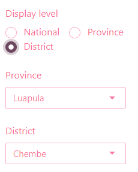
When a user picks a different province, the available district list should update.
observeEvent() reacts to the change and uses updateSelectInput() to refresh the dropdown.
Step 3 - Create Reactives that Filter Data by Level
Now we need to tell the app what to do when we select a different level so we’ll create two reactive datasets:
data_selected_year_level()- for single-year views (value boxes and main plots)data_all_years_level()- for compare-years plots
Replace our current filtered_data() reactive with these new calls:
# --- Reactive: Data for the selected year & level ---
data_selected_year_level <- reactive({
df <- dplyr::filter(dhis2_data, year == input$dropdown_year)
if (input$level == "Province") {
df <- dplyr::filter(df, province == input$province)
} else if (input$level == "District") {
df <- dplyr::filter(df, province == input$province, district == input$district)
}
df
})
# --- Reactive: Data for all years (used for compare-years plots) ---
data_all_years_level <- reactive({
df <- dhis2_data
if (input$level == "Province") {
df <- dplyr::filter(df, province == input$province)
} else if (input$level == "District") {
df <- dplyr::filter(df, province == input$province, district == input$district)
}
df
})These functions check which “level” and year is selected and filter the dataset accordingly.
Step 4 - Use the New Reactives outputs
Update your output$date_text_test code to use df <- data_selected_year_level() and do the same in you output$footer_text code too.
Next Update the value boxes, replace your existing value box render calls with:
output$value_conf <- renderText({
value_box_val(data_selected_year_level(), "Confirmed")
})
output$value_test <- renderText({
value_box_val(data_selected_year_level(), "Tested")
})
output$value_clin <- renderText({
value_box_val(data_selected_year_level(), "Clinical")
})
output$value_total_cases <- renderText({
value_box_val(data_selected_year_level(), c("Clinical", "Confirmed"))
})Each value box now reflects the selected spatial scale and year.
Update your Plot Calls
Modify your plot render functions so they use both reactives:
output$plot_confirmed <- renderPlotly({
make_time_plot(
df = data_selected_year_level(),
data_type_name = "Confirmed",
compare_years = input$compare_years,
df_all_years = data_all_years_level()
)
})
output$plot_clinical <- renderPlotly({
make_time_plot(
data_selected_year_level(), "Clinical",
input$compare_years, data_all_years_level()
)
})
output$plot_tested <- renderPlotly({
make_time_plot(
data_selected_year_level(), "Tested",
input$compare_years, data_all_years_level()
)
})
output$plot_tpr <- renderPlotly({
make_tpr_plot(
df = data_all_years_level(),
compare_years = input$compare_years,
select_year = input$dropdown_year
)
})The next thing we need to do is update the plotting function code to work with our new reactive datasets:
Make the helpers take both the selected-year, level-filtered data and the all-years, level-filtered data.
Update make_time_plot()
What changes?
Add a new argument:
df_all_years.In single-year mode, use
df(already filtered to selected year + level).In compare-years mode, use
df_all_years(filtered to level, but across all years).
#-helper function to create plots----------------------------------------------
# df = selected-year dataset, already filtered by level (National/Province/District)
# data_type_name = "Confirmed" | "Clinical" | "Tested"
# compare_years = TRUE/FALSE (toggle)
# df_all_years = all-years dataset, already filtered by the same level
make_time_plot <- function(df, data_type_name, compare_years, df_all_years) {
if (!isTRUE(compare_years)) {
# ---- Single-year view (uses df) ----
df_filtered <- df |>
dplyr::filter(data_type == data_type_name) |>
dplyr::group_by(period, data_type) |>
dplyr::summarise(count = sum(count, na.rm = TRUE), .groups = "drop")
if (nrow(df_filtered) == 0) return(NULL)
p <- ggplot(
df_filtered,
aes(x = period, y = count, col = data_type)
) +
geom_point() +
geom_line() +
labs(x = "Month, Year", y = "Count", col = NULL) +
theme_minimal(14) +
scale_y_continuous(labels = scales::comma, limits = c(0, NA)) +
scale_color_manual(values = c(
"Confirmed" = "#6D475F",
"Clinical" = "#95AFF1",
"Tested" = "#C3A3EF"
))
return(plotly::ggplotly(p))
} else {
# ---- Compare-years view (uses df_all_years) ----
df_filtered <- df_all_years |>
dplyr::filter(data_type == data_type_name) |>
dplyr::group_by(period, year, data_type) |>
dplyr::summarise(count = sum(count, na.rm = TRUE), .groups = "drop") |>
dplyr::mutate(
month = lubridate::month(period),
year = as.factor(year)
)
if (nrow(df_filtered) == 0) return(NULL)
p <- ggplot(
df_filtered,
aes(x = month, y = count, col = year, group = year)
) +
geom_line(linewidth = 1) +
geom_point(size = 1.5) +
scale_x_continuous(breaks = 1:12, labels = month.abb) +
labs(x = "Month", y = "Count", col = "Year") +
theme_minimal(14) +
scale_y_continuous(labels = scales::comma, limits = c(0, NA)) +
scale_color_brewer(palette = "Set2")
return(plotly::ggplotly(p))
}
}Step 5 - Update the server plot calls
Now that the helpers are ready, you can safely change the server code to pass:
data_selected_year_level()for single-year modedata_all_years_level()for compare-years mode
output$plot_confirmed <- renderPlotly({
make_time_plot(
df = data_selected_year_level(),
data_type_name = "Confirmed",
compare_years = input$compare_years,
df_all_years = data_all_years_level()
)
})
output$plot_clinical <- renderPlotly({
make_time_plot(
data_selected_year_level(), "Clinical",
input$compare_years, data_all_years_level()
)
})
output$plot_tested <- renderPlotly({
make_time_plot(
data_selected_year_level(), "Tested",
input$compare_years, data_all_years_level()
)
})
output$plot_tpr <- renderPlotly({
make_tpr_plot(
df = data_all_years_level(), # all-years, level-filtered
compare_years = input$compare_years,
select_year = input$dropdown_year
)
})Step 6 - Map highlights
When a user selects a Province or District, it helps to reinforce that choice visually on the maps.
We’ll draw a bold outline around the selected area.
We’ll add the following to our code:
Two small reactives that return the selected province/district geometries
Extra polylines layers to display crisp outlines on both maps
Add these inside your server (near your other map reactives).
They each return a 1-row sf object
# Selected province outline (returns 1 row sf or NULL)
selected_province_outline <- reactive({
if (input$level == "National") return(NULL)
shp <- province_shp |>
dplyr::filter(province == input$province)
if (nrow(shp) == 0) return(NULL)
shp
})
# Selected district outline (returns 1 row sf or NULL)
selected_district_outline <- reactive({
if (input$level != "District") return(NULL)
shp <- district_shp |>
dplyr::filter(province == input$province, district == input$district)
if (nrow(shp) == 0) return(NULL)
shp
})We’ll keep your base map code and append an extra addPolylines() after the polygons so the outline sits on top. Replace your map code with the following:
# Province level map
output$map_province <- leaflet::renderLeaflet({
req(province_map_sf())
sf_obj <- province_map_sf()
pal <- make_inc_palette(sf_obj$inc_per_1k)
m <- leaflet::leaflet(sf_obj, options = leaflet::leafletOptions(minZoom = 4)) |>
leaflet::addProviderTiles(leaflet::providers$CartoDB.Positron) |>
leaflet::addPolygons(
fillColor = ~ pal(inc_per_1k),
color = "#444444", weight = 1, fillOpacity = 0.8,
label = ~ paste0(province, ": ", round(inc_per_1k, 0), " per 1,000"),
highlightOptions = leaflet::highlightOptions(weight = 2, color = "#333333", bringToFront = TRUE)
) |>
leaflet::addLegend(
pal = pal, values = ~inc_per_1k,
position = "bottomright",
title = "Incidence per 1,000"
)
# --- draw selected province outline on top (if applicable) ---
sel_prov <- selected_province_outline()
if (!is.null(sel_prov)) {
m <- m |>
leaflet::addPolylines(
data = sel_prov,
color = "#6D475F", # use your theme accent
weight = 4, # thicker to stand out
opacity = 1,
fill = FALSE
)
}
m
})# distrinct level map
output$map_district <- leaflet::renderLeaflet({
req(district_map_sf())
sf_obj <- district_map_sf()
pal <- make_inc_palette(sf_obj$inc_per_1k)
m <- leaflet::leaflet(sf_obj, options = leaflet::leafletOptions(minZoom = 4)) |>
leaflet::addProviderTiles(leaflet::providers$CartoDB.Positron) |>
leaflet::addPolygons(
fillColor = ~ pal(inc_per_1k),
color = "#444444", weight = 0.6, fillOpacity = 0.8,
label = ~ paste0(province, ", ", district, ": ", round(inc_per_1k, 0), " per 1,000"),
highlightOptions = leaflet::highlightOptions(weight = 2, color = "#333333", bringToFront = TRUE)
) |>
leaflet::addLegend(
pal = pal, values = ~inc_per_1k,
position = "bottomright",
title = "Incidence per 1,000"
)
# --- province outline (for context) ---
sel_prov <- selected_province_outline()
if (!is.null(sel_prov)) {
m <- m |>
leaflet::addPolylines(
data = sel_prov,
color = "#6D475F",
weight = 3,
opacity = 1,
fill = FALSE
)
}
# --- district outline (only when level = District) ---
sel_dist <- selected_district_outline()
if (!is.null(sel_dist)) {
m <- m |>
leaflet::addPolylines(
data = sel_dist,
color = "#6D475F",
weight = 5, # slightly thicker than province
opacity = 1,
fill = FALSE
)
}
m
})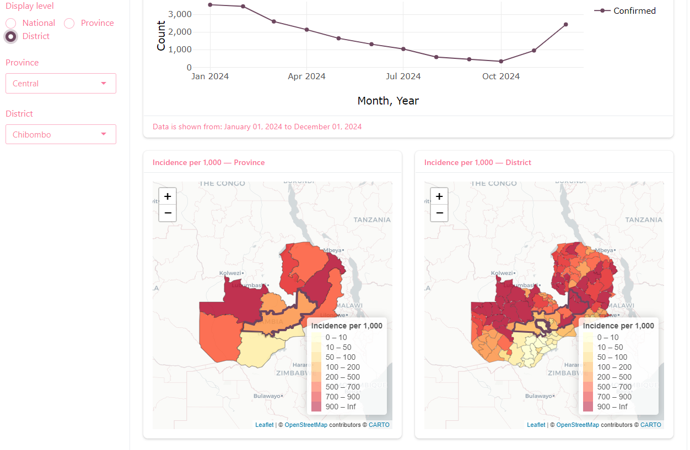
Your maps now acknowledge and emphasize the user’s selection!
Next Steps and Extensions
While we have covered a broad range of features, this only scratches the surface of what you can build with Shiny. Below are some suggested areas to explore next as you continue developing your Shiny skills.
Expanding Functionality
Add additional filters such as date ranges or multiple administrative levels
Build more complex plots, for example:
Adding trendlines or smoothing
Faceting across multiple provinces
Allowing users to interactively select multiple indicators for comparison
Add more text explanations or info popups to your dashboard
Add input widgets that allow the user to look at the highest or lowest ranking incidence areas
Build in tabular data summaries
Allow for data downloads
Build drill-down functionality to explore facility-level data
Automated data pulls into your dashboard
Organizing and Scaling Your Code
As dashboards become more complex, managing code in a single app file can become difficult. You may want to:
Split your code into multiple files, separating UI, server, and helper functions
Use modular design with
callModule()ormoduleServer()to create reusable componentsBuild centralized helper functions in a dedicated script (e.g.,
helpers.R) and source this at the top of yourapp.Rfile to keep things clean.
This makes your code easier to maintain and scale over time.
Deployment and Sharing
There are multiple options for sharing Shiny dashboards:
Running locally for personal or internal use (what we did today)
Publishing to cloud services such as shinyapps.io (free options)
Deploying on enterprise platforms such as Posit Connect ($$)
Hosting internally on government or institutional servers
When deploying dashboards, consider whether your data includes any sensitive or confidential information. Secure hosting, access controls, and user authentication may be required depending on your intended audience.
For more information on hosting check out this Shiny article.
Styling and User Experience
In addition to the core functionality, improving the design and appearance of your dashboard can make it easier to use:
Customize your
bslibthemes to align with institutional brandingProvide users with contextual help such as pop-up modals or collapsible panels to explain indicators or methods
Use dynamic tooltips, colour schemes, or alert messages to highlight important information
Useful Resources for Further Learning
Mastering Shiny by Hadley Wickham (free online book)
bslib Documentation for theming
Shiny Gallery Examples for code samples